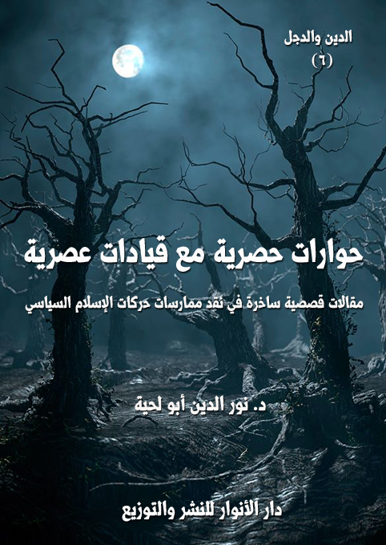

الكتاب: حوارات حصرية مع قيادات عصرية
المؤلف: أ.د. نور الدين أبو لحية
الناشر: دار الأنوار للنشر والتوزيع
الطبعة: الثانية، 1437 هـ
عدد الصفحات: 122
ISBN: 978-3-330-84883-2
لمطالعة الكتاب من تطبيق مؤلفاتي المجاني وهو أحسن وأيسر: هنا

التعريف بالكتاب
في هذه المقالات القصصية الساخرة حوارات افتراضية مع جماعات الإسلام السياسي سواء كانت تتبنى منهج التغيير بالآليات الديمقراطية، أو باستعمال العنف، وفيها نقد علمي لأطروحاتها الفكرية، وللآليات التي تنفذ بها مشاريعها، وقبل ذلك نقد لتصوراتها عن الدين ودوره في الحياة.
حوارات حصرية مع قيادات عصرية (4)
هذه حوارات أجريتها في أماكن مختلفة من هذا العالم، ولم يكن لي حينها – للأسف – آلة تسجيل، ولا آلة تصوير، ولا أي آلة من هذه الآلات التي يعرفها الناس في هذا الزمان.. لم يكن لي حينها إلا قلم رصاص واحد، وأوراق محدودة، ولهذا كنت أشفق عليه وعليها، فألخص ما يقال تلخيصا شديدا..
ولهذا أرجو ألا يطالبني أحد بوثائق الصور والأصوات الدالة على هذه الحوارات.. ولكني مع ذلك أستطيع أن آتي بدل الأصوات والصور بعشرات المجلدات الدالة على صدق ما يرد فيها.
هذا من ناحية توثيق هذه الحوارات..
أما من ناحية الأشخاص الذين تحاورت معهم فيها فهم كثيرون، وكلهم قيادات.. ولكنهم قيادات في الأفكار، لا في السياسة، ولا في غيرها.
أي أن هؤلاء أصحاب مشاريع فكرية قد تمس السياسة، وقد تمس الاقتصاد، وقد تمس قضايا المجتمع المختلفة.. وقد لا تمسها جميعا، وإنما تحلق في آفاق الفكر التي تحاول أن تتعرف على حقائق الوجود، وقد تصل إليها، وقد تصل بدلها إلى الخرافة والأسطورة.
وبما أن هذه الشخصيات قيادات، وليسوا ناسا عاديين، ولم يكن لي
حوارات حصرية مع قيادات عصرية (5)
بحسب وضعي الاجتماعي البسيط قدرة على الحديث مباشرة معهم، فلهذا سترون أن الكثير من هذه الحوارات لم تكن الأسئلة فيها مني مباشرة، وإنما كنت أتنصت فيها، وأسجل ما يقال، وقد أتدخل في الصياغة والاختصار حرصا على قلمي الوحيد وأوراقي القليلة.
وحرصا مني أيضا على سلامتي من أي متابعة لم أسجل اسم أي شخص من الذين تحاورت معهم، بل اكتفيت فقط بما يشير إليهم، وبما يشير في نفس الوقت إلى غيرهم، حتى يمكنني التملص إن توجهت إلي أي تهمة.
وأرجو من القراء الأعزاء إن وجدوا أي خطأ في هذه الحوارات أن يرسلوا لي بطلب التصحيح، فقد كتبتها كما ذكرت لكم بقلم رصاص، وليس بقلم جاف، ولدي - بحمد الله - ممحاة أستطيع أن أمحو بها كل ما كتبت أو بعض ما كتبت، ولدي مع الممحاة بعض الورع الذي يحول بيني وبين أن أقوّل أحدا من الناس ما لم يقل.. فلا تترددوا في الرد علي، وتصحيح ما قد أقع فيه من أخطاء، ولكم مني جزيل الشكر والثناء.
حوارات حصرية مع قيادات عصرية (6)
الحركة الإسلامية.. والغباء السياسي
عندما أتيحت لهم الفرصة للوصول إلى السلطة التي طالما حلموا بها، لم أكن أتصور أبدا أنهم بهذا الغباء، وبتلك السذاجة المقيتة.. لقد غمرهم الغرور، فتصوروا أنهم ملكوا الدنيا والآخرة، ولم يبق لهم إلا أن يصيحوا كما صاح فرعون: {أَلَيْسَ لِي مُلْكُ مِصْرَ وَهَذِهِ الْأَنْهَارُ تَجْرِي مِنْ تَحْتِي أَفَلَا تُبْصِرُونَ} [الزخرف: 51]
كان في مقدورهم أن يتريثوا، ولا يستعجلوا، حتى يحضر الوقت المناسب الذي يرون أنهم يمكنوا أن يستقروا على الكرسي الذي جعلوه هدفهم الأكبر، بل هدفهم الوحيد.
وكان في إمكانهم - من باب السياسة والدهاء - أن يلينوا لمخالفيهم حتى لا يستطيع أحد أن يكسرهم.. ولكن الغرور والكبرياء اللذين ألبسوهما اسم العزة حالا بينهم وبين ذلك، فراحوا يدمرون كل شيء، ويدمرون معه أنفسهم أيضا.
في ذلك الحين أتيحت لي الفرصة لأجري الحوار مع أحدهم في قصره الفخم، وقد توسلت إلى ذلك كعادتي بحيلة من الحيل.. لن أذكرها لكم طبعا، ولن أذكر لكم اسم محاوري أيضا، ولو أنه معروف للجميع.. كانوا يسمعون صدى صوته كل حين في كل القنوات والإذاعات والجرائد
حوارات حصرية مع قيادات عصرية (7)
والمجلات يتودد مرة، ويهدد أخرى.
المهم أن الفرصة أتيحت لي لأتحدث معه حديث الند للند، وهذا نص الحوار مع بعض التصرفات التي يقتضيها المقام، وتقتضيها اللغة، فقد كان محاوري حديدا شديدا يتحدث بلهجة فيها بعض العنف الذي أخشى أن يخدش شعور القراء.
قال لي: لا شك أنك جئتني هذه المرة لتكرر علي ما ذكرته سابقا من الدعوة إلى اللين والسلام.. أو الخنوع والذلة.
قلت: أجل.. ولكن هذه المرة تختلف.. فالأحزاب قد تحزبت عليكم.. والناس قد شمروا سواعدهم يريدون رحيلكم.. أو استئصالكم.. وقد بلغ بهم الغضب حده.. فلا تستهينوا بالأمر.
ضحك ضحكة عالية، وقال: ومنذ متى صار للدهماء والغوغاء والعامة رأي؟.. إنهم أحقر من أن يفعلوا شيئا.. إنهم والهباء سواء..
قال ذلك، ثم نفخ بفمه على الهواء، ثم قال: سننفخ عليهم مثلما أنفخ على هذا الهواء، ولن ترى بعد ذلك أحدا منهم.
قلت: ولكنهم حددوا موعدا دقيقا.. وقد اقترب أجله.. لعلك نسيته.. إنه الثلاثون من..
قاطعني بقوة، وقال: ثلاثون أو أربعون.. سيمر كما تمر سائر الأيام.
حوارات حصرية مع قيادات عصرية (8)
قلت: ولكنهم قد يرشونكم بالماء.. فيبللونكم.. بل قد يغرقونكم.
غضب، وقال: من رشنا بالماء سنرشه بالدم.. ومن سبنا بكلمة سببناه بعشر.. ومن حفر لنا حفرة رميناه فيها، وأحرقناه.
قلت: ولكن القرآن الكريم الذي تزعمون أنكم تريدون تحكيمه على الناس لا يقول ذلك.. انظر كيف يخاطب الله تعالى رسوله صلى الله عليه وآله وسلم: {قُلْ رَبِّ إِمَّا تُرِيَنِّي مَا يُوعَدُونَ (93) رَبِّ فَلَا تَجْعَلْنِي فِي الْقَوْمِ الظَّالِمِينَ (94) وَإِنَّا عَلَى أَنْ نُرِيَكَ مَا نَعِدُهُمْ لَقَادِرُونَ (95) ادْفَعْ بِالَّتِي هِيَ أَحْسَنُ السَّيِّئَةَ نَحْنُ أَعْلَمُ بِمَا يَصِفُونَ (96)} [المؤمنون: 93 - 96]
إن دعوة رسول الله صلى الله عليه وآله وسلم لأن يدفع بالتي هي أحسن ليست مع المؤمنين، بل مع الكفار المشركين، بل المحاربين الذين استعملوا كل الوسائل لحربه وحرب المؤمنين.
إن القرآن الكريم كله لين وسلام..
إنه يعلمنا كيف نتعامل مع الناس.. مع جميع أصناف الناس حتى الظلمة منهم.. اسمع إليه، وهو يقول: {وَمَنْ أَحْسَنُ قَوْلًا مِمَّنْ دَعَا إِلَى اللَّهِ وَعَمِلَ صَالِحًا وَقَالَ إِنَّنِي مِنَ الْمُسْلِمِينَ (33) وَلَا تَسْتَوِي الْحَسَنَةُ وَلَا السَّيِّئَةُ ادْفَعْ بِالَّتِي هِيَ أَحْسَنُ فَإِذَا الَّذِي بَيْنَكَ وَبَيْنَهُ عَدَاوَةٌ كَأَنَّهُ وَلِيٌّ حَمِيمٌ (34) وَمَا يُلَقَّاهَا إِلَّا الَّذِينَ صَبَرُوا وَمَا يُلَقَّاهَا إِلَّا ذُو حَظٍّ عَظِيمٍ (35)} [فصلت: 33
حوارات حصرية مع قيادات عصرية (9)
- 35]
إن هذه الآية الكريمة تعلمنا كيف نمارس السياسية.. إنها تعلمنا أننا إذا أحسنا إلى من أساء إلينا سنقوده إلى مصافاتنا ومحبتنا والحنو علينا، حتى يصير كأنه ولي لك حميم.
وقد طبق رسول الله صلى الله عليه وآله وسلم في حياته ذلك خير تطبيق، فحول أعداءه إلى أولياء، وخصومه إلى مناصرين.
طأطأ رأسه، فطمعت في أن يكون ما قرأته من القرآن الكريم قد أثر فيه، لكنه بعد أن فكر ودبر وقدر صاح: هل أنت أفضل أم اتحاد علماء المسلمين؟.. هل أنت أفضل أم العلامة القرضاوي؟ هل أنت أفضل أم كل العلماء الذين نرجع إليهم كل حين؟ هل أنت أفضل أم أولئك الذين يحفظون القرآن ويصلون التراويح به عن ظهر قلب؟
قلت: وما علاقة هذا بذاك؟ لقد قرأت لك من القرآن الكريم الذي تزعم أنه دستورك ما يدلك على كيفية التعامل مع المخالفين، بل مع الخصوم.
قال: لاشك أن في القرآن أيضا ما يدل على خلاف ما ذكرت.. وإلا كيف تبرر مواقف العلماء العاملين الذين ذكرت لك؟
قلت: ولكن من العلماء من هذه البلدة وغيرها من هم أكثر علما، وأكثر ورعا وزهدا، وهم مع المخالفين، وهم يرددون ما أردد، وينصحونكم بما
حوارات حصرية مع قيادات عصرية (10)
أنصحكم به.
قال: دعني من أولئك المجرمين.. أولئك سيكونون أول من تسعر بهم الخنادق التي سنوقدها لأعدائنا.. ألا تعرف ما حصل للبوطي الضال المضل؟.. سنفعل بهم مثلما فعلنا به.. لن نخسر عليهم أكثر من فتوى يفتيها اتحاد علمائنا، أو بيان يصدرونه؟
قلت: لكن المسألة أخطر.. إن شعبا كاملا يتجهز لكم.. ألا ترى أنه من الصعب مواجهة شعب كامل؟
قال: لقد تمرن شعبنا على الخضوع للأقوى.. ألم يخضع قبل ذلك للفراعنة.. ثم خضع للماليك وللعثمانيين.. حتى وصل الأمر إلى الذي تعرف.
قلت: إن مطالب هؤلاء الناس بسيطة جدا.. وما دام لكم من القوة والسلطان والغلبة ما لكم، فلم لا تلينون لهم؟.. اقبلوا ما يدعونكم إليه.. وأعيدوا الاستفتاء.. فإن كانت لكم الغلبة برهنتم للمجتمع المحلي والدولي أنكم منتخبون بامتياز.. وصار لكم من الصلاحيات بعدها ما لا يخطر لكم على بال.
قال: وإن لم ننجح.. ماذا سيحصل؟
قلت: حينها تعودون إلى محالكم التي جئتم منها.. وهي محال محترمة..
حوارات حصرية مع قيادات عصرية (11)
ولن تفقدوا شيئا.. فقد يجرب الشعب غيركم.. ثم يعود إليكم.. بل قد تظفرون من احترامه ما يفوق كل الكراسي والنياشين.
إنكم ستبرهنون للعالم أنكم قوم زاهدون وورعون، وأنكم تحترمون إرادة شعوبكم.
طأطأ رأسه، فطمعت في أن يكون قد تخلى عن بعض كبريائه، لكنه رفعه بشدة، وقال: هل ترانا حمقى حتى نضحي بالشرعية بهذه السهولة؟
قلت: وما عساكم تفعلون، وأنتم تعلمون أن كل شيء بيد خصومكم.. فلينوا.. حتى لا تكسروا.
قال: لقد مضى عهد الكسر.. ومضى معه عهد السجون.. لن نسجن.. ولن نعتقل.. ولن يحصل شيء.. نحن الآن في فترة التمكين.. نحن الآن في فترة القوة التي لا تقهر.
بعد ذلك الحديث بعشرة أيام.. زرته في سجنه.. وقلت له: لا تحزن.. لا تزال الفرص أمامكم.. يمكنكم أن تتراجعوا وتلينوا وتخففوا غلواءكم..
نظر إلي بقسوة، وقال: لا.. لن نلين.. سوف ترى كيف يعلق هؤلاء الظلمة على المشانق.
قلت: إن لم ترحموا أنفسكم.. فارحموا أولئك العوام البسطاء الذين حولتم حياتهم إلى جحيم.
حوارات حصرية مع قيادات عصرية (12)
قال: كيف تريد لنا أن نسجن ويهنئون هم بالعيش.. لن يهنأ أحد بالعيش بعد الآن.. علينا وعلى أعدائنا.
لم أدر ما أقول له.. ولكن كانت المصائب تتوالي عليهم كل حين.. فمرة تصادر أموالهم.. ومرة يوضعون في خانة الإرهاب.. وهم لا يزالون في كبريائهم وغرورهم، وكل أمانيهم أن يخرب اقتصاد بلادهم، وتدمر مقدراتها.. ولو أتيح لهم أن يحضروا أمريكا والناتو وهتلر ونيرون ليبيد شعبهم لما ترددوا في ذلك لحظة واحدة.
لقد صار لقلوبهم من السواد والحقد ما أعمى بصرهم وبصيرتهم عن النظر في مستقبلهم ومستقبل أولئك البسطاء الذين غرروا بهم.
حوارات حصرية مع قيادات عصرية (13)
أرى نفسي بحكم الورع الذي أخبرتكم عنه سابقا مضطرا لأن أذكر لكم الطريقة التي استطعت أن أصل بها إلى هؤلاء المتحاورين الجدد، ذلك أن الطريق إلى الدخول إلى القواقع التي يجرون فيها حواراتهم صعب جدا، بل يكاد يكون مستحيلا.
وقد حسبت في تلك الأيام السنوات التي أحتاجها للوصول إلى رأس نظامهم الهرمي، فوجدته خارج إطار عمري الممدود أو المحدود.. ووجدتني حتى لو وصلت إلى مرتبة أدنى من ذلك بكثير، فإني لن أكون أنا حينها، بل سأكون شخصا آخر تماما.. لأني سأتحول بحركة جوهرية عميقة إلى كيان جديد ليس فيه من ذاتي المتحررة سوى الاسم واللقب، وقد يتغيران في درجة من درجات الهرم، ليذهب بعدها اسمي ورسمي كلاهما.
ذلك أن أول مرحلة تبدأ فيها المسيرة في هذا النظام الهرمي هو محو شخصية الداخل ليتحول إلى أداة ووسيلة عمياء منقادة، بدل كونه إنسانا بصيرا حرا، فأول درس يقدم هناك هو (الجندية) و(الطاعة).. وأول ممارسة سلوكية هي (البيعة) و(العهد)
ولذلك لجأت إلى كبير في قريتنا أستشيره عن كيفية الدخول، ولو لعشر دقائق لسماع ما يدور هناك من حديث..
حوارات حصرية مع قيادات عصرية (14)
وقد استفزني إليه - خصوصا في تلك الأيام – الحديث عن مشروع عظيم لتغيير خطير لا يحتاج سوى مائة يوم لا يتعداها ولو بيوم واحد.
لقد زاد عجبي حينها.. لا في المشروع فقط.. ولكن في الأيام المعدودة التي يمكن أن يتحقق فيها..
عندما ذكرت لقريبي الشيخ ذلك تعجب هو الآخر، وراح يفكر معي في الحيلة التي نستطيع بها أن ندخل تلك السراديب، ونقتحم تلك الكواليس.
وبما أن قريبي كان ملما بما يسميه علوم الحكمة وأسرار الحروف.. وغيرها.. فقد قال لي: لاشك أن هؤلاء ظفروا بالخاتم الذي ضاع منذ زمان طويل.. لقد قرأت كل كتب الحكمة، ومارست جميع الطقوس.. وحرقت جميع أنواع البخور لأحصل عليه.. فلم أستطع.. فكيف تسنى لهم ذلك. لا شك أن لهم قدرة سحرية عجيبة..
ثم التفت إلي، وقال: لقد شوقتني يا ولد إلى الدخول إلى عالمهم..
سكت هنيهة، ثم صاح: وجدتها.. وجدتها..
قلت: ما وجدت؟
قال: تستطيع أن تقتحم قوقعتهم حتى لو كانت من خرسانة مسلحة.. وتستطيع أن تدخل عالمهم حتى لو كان محصنا بالجن الأزرق والأحمر.
حوارات حصرية مع قيادات عصرية (15)
قلت: كيف؟
قال: لدي بعض الأسماء.. سأسلمك إياها.. رددها فقط مئات الآلاف من المرات.. وستجد نفسك حينها بينهم تراهم ولا يرونك.. لكن لا تنس أن تحضر لي معك التميمة التي استطاعوا أن يتحصلوا بها على خاتم النهضة العجيب.. بل إن استطعت أن تحضره معك فافعل.. فما أجمل أن يكون لدى كل واحد منا خاتم نهضة!
أعطاني سيدي الشيخ تلك الأسماء.. وطبعا لن أذكرها لكم فقد عاهدته على ذلك.. وعندما وصلت إلى رقم مكون من أربع سبعات أو خمسة.. وجدت نفسي أتحرك بشفافية، وكأنني صورة لا جسد يحملها.. كنت أرى الناس، بل أدخل في ثنايا أجسامهم من دون أن يشعروا بي.. بل استطعت أن أخترق جبلا من دون أن يشعر بي هو الآخر.
طبعا.. قضيت بعض الساعات مستمتعا بعالم تحولي إلى صورة.. لكني بعد أن ذهب الانبهار خطر على بالي الدخول إلى القوقعة التي كنت أبحث عن الأسرار التي تجري في خلالها.
دخلت بعض المقرات المحترمة.. وتنصت على بعض القيادات المهمة إلى أن عرفت أن هناك اجتماعا سريا جدا سيعقد ذلك اليوم، وفي مكان لن أسميه طبعا لدواع أمنية.
حوارات حصرية مع قيادات عصرية (16)
دخل المجتمعون صفوفا متراصة منتظمة ممتلئة بالاحترام.. وكان الكثير منهم يشبهون الإنسان الآلي.. حتى أني قرصت أحدهم لأتأكد: هل هو إنسان حقيقي أم لا؟ وطبعا لكوني صورة لم يشعر بقرصتي.. ولكني رأيت داخل أذنه جهازا صوتيا اقتربت منه.. فسمعت فيه لغة غريبة اكتشفت أنها الرموز التي يتلقى بها هؤلاء الأوامر.
خفت أن يكون حوارهم بعد ذلك من جنس تلك الرموز الغريبة.. لكن بحمد الله.. لم يكن كذلك.
دخل المرشد أولا.. وجلس في أعلى المنصة.. ثم دخل اثنان وجلسا دونه.. ثم دخل أربعة.. وجلسا دون السابقين.. ثم ثمانية.. ثم ستة عشر.. وهكذا بمتتالية هندسية لم أحص نهايتها.
وجدت محلا صالحا أمام المرشد، فرحت أجلس بجانبه، فقد كان أكثر الأماكن رفاهية، وكان سماع الحوار بصورة دقيقة.. لأني قرأت في بعض المنشورات هناك أن الحوار فقط سيكون بين الصفوف الثلاثة الأولى.. أما سائر الصفوف.. فدورها فقط هو تنفيذ الأوامر التي ترد إليهم.
بدأ الحوار من سؤال من الصف الثاني حول مشروع النهضة.. فكدت أطير فرحا.
قال السائل: يا مولانا المرشد.. أطال الله بقاءك.. وأدام عزك.. ألا ترى
حوارات حصرية مع قيادات عصرية (17)
أن الأيام المئة التي حددتها أدنى من أن تحقق هذا المشروع الضخم؟
ابتسم المرشد ابتسامة صفراء، وقال: أجل.. صحيح.. الأيام المئة لا تكفي لأن تقيل النائب العام، فكيف تكفي لمشروع النهضة؟
قال آخر: النائب العام!.. وما علاقة النائب العام بمشروع النهضة؟
قال المرشد: النائب العام هو الحجرة الأولى التي نحتاج إلى قلعها لإقامة مشروعنا.
قال آخر: وهل هناك أحجار الأخرى؟
قال المرشد: أجل.. الكل.. الدولة العميقة.. والدولة السطحية.. الأقزام والعمالقة.. الشرطة والعسكر.. الفنانون والإعلاميون.. كلهم حجارة.. ولا يمكن أن تقوم لنا قائمة في ظل وجودهم.
قال آخر: لكن كيف.. ألا ترى من الصعب فعل ذلك؟
قال المرشد: بمشروع النهضة نفعل ذلك.
قال الأول: ولكن المدة التي حددتموها لمشروع النهضة لا يمكن أن تفعل شيئا.
قال المرشد: أجل.. لقد قلت لي ذلك سابقا.. أذكره جيدا.. وقد أجبتك، ولا حاجة لإعادة الجواب.
قال آخر: يا مولانا.. هلا تفضلت وشرحت لنا الكيفية العملية التي
حوارات حصرية مع قيادات عصرية (18)
يمكننا من خلالها أن ننفذ هذا المشروع.
ابتسم المرشد، وقال: هذا ما أريده منكم.. الكيفية العملية.. نحن قوم عمليون.. ولا يصح أن نبقى نسأل ونسأل..
الكيفية العملية بسيطة جدا.. وهي أن نتغلغل في كل المؤسسات لنزيح تلك الحجارة التي تحول بيننا وبين تحقيق مشروعنا.
ثم قهقه قليلا، وقال: أما مشروع النهضة.. ومائة يوم.. فهي وسيلتنا لتحقيق ذلك.. فالناس كما تعلمون يحبون الأرقام، ويحبون الأرقام القريبة العاجلة.. ولو ذكرنا لهم أن مشروع النهضة سيستغرق مائة عام لأنفوا وشمخوا بأنوفهم، وللجأوا إلى أعدائنا.. ولذلك لم نفعل سوى أن حولنا (العام) إلى (يوم)، فبدل مائة عام صارت مائة يوم.
ثم رفع رأسه إلى السماء، وقال: في جلسة من جلساتي التدبرية مع القرآن الكريم لاحت لي هذه الفكرة.. لقد قرأت قوله تعالى: {وَيَسْتَعْجِلُونَكَ بِالْعَذَابِ وَلَنْ يُخْلِفَ اللَّهُ وَعْدَهُ وَإِنَّ يَوْمًا عِنْدَ رَبِّكَ كَأَلْفِ سَنَةٍ مِمَّا تَعُدُّونَ} [الحج:47]
فقلت في نفسي: أجل.. لم لا نستفيد من هذه الآية في مشروعنا.. فما الفرق بين مائة يوم أو مائة عام..
وبما أن البشر بطبيعة العجلة التي يحملونها، لن يرضوا مشروعا بمائة
حوارات حصرية مع قيادات عصرية (19)
عام.. فقد اختصرت مائة عام في مائة يوم.. وأمرتكم بالتبشير بمشروع نهضتنا الذي لن يكلفنا سوى مائة يوم.
صاح اللذان في الصف الأول بالتكبير والتحميد.. ثم صاح من بعدهما.. ثم من سائر الصفوف إلى أن صمت أذناي من كثرة الأصوات وارتفاعها.. وللأسف كان لتلك الأصوات تأثيرها الخطير على طاقة الإخفاء التي بذلت جهدي في الحصول عليها.
لهذا لم أجد نفسي إلا في المحل الذي كنت فيه أشم أريج البخور، وأردد الأسماء بلا شعور.
حوارات حصرية مع قيادات عصرية (20)
لا أخفي عليكم – معشر القراء الأعزاء – أني مع كوني مسلما، ولا أقدس في حياتي شيئا كما أقدس القرآن الكريم، والسنة المطهرة:
ذلك أن الأول هو كلمة الله الأخيرة للبشرية، وهو الكلمة التي تسمع الصم، وتحيي الموات، وتخاطب النفس من أعمق أعماقها.
وأما الثاني فهو هدي رسول الله صلى الله عليه وآله وسلم الذي اختاره ربه ليكون أنموذجا مثاليا يقتدي به الخلائق جميعا، وهو الواسطة الإلهية لكل الكمالات الإنسانية وغير الإنسانية.
ولكني مع هذا التقديس أكره المتاجرة بهذا الكتاب العظيم، كما أكره المتاجرة بالسنة المطهرة.
وكان أول من زرع هذه الكراهية في نفسي ذلك الجيش الذي عندما أحس بالهزيمة رفع المصاحف، ليستخدمها وسيلة لتحقيق مآربه الخسيسة.
وبقيت المصاحف ترفع في كل الأجيال، وبيد كل المنافقين والكذابين والدجالين إلى أن جاء عصرنا الحديث، فأصبحت تجارة رفع المصاحف تجارة رائجة يلجأ إليها كل حزب أو حركة أو توجه لم يجد له من الناس من يقف بجانبه، لكنه ما إن يرفع المصاحف، ويقول: (أيها الناس تعالوا لنتحاكم إلى هذا المصحف)، تجد الناس خلفه يسيرون.. شعروا أو لم يشعروا.
لن أطيل عليكم.. بل سأقص عليكم قصة حوار جديد حول هذا الموضوع، وهو يتعلق بصديق لي، ولذلك لن أسميه خوفا على نفسي من جهة، وخوفا على أن تنصرف تلك الجماهير الكثيرة التي وثقت به، ورفعته إلى أعلى المناصب، مع أن المسكين
حوارات حصرية مع قيادات عصرية (21)
ليس له أي برنامج.. بل ليس له أي كفاءة علمية ولا عملية إلا كفاءة الكنس والطبخ والحراسة.
وقد جاءني قبل أن يفكر هذا التفكير يطلب مني أن أتوسط له لدى مدير الجامعة التي أعمل فيها ليعمل أي عمل.. كناسا.. أو طباخا.. أو حارسا ليليا.. أو نهاريا.. المهم أن يعمل، ويتخلص من البطالة التي طال عليه أمدها.
لكني أخبرته أني أقل شأنا من أن أكون واسطة، لأني إن تقدمت بأي طلب للمدير فإنه سيعتبر ذلك مني جسارة، وتعد لحدودي، ولذلك فإن علي أن أتقدم بالطلب أولا إلى من هم دونه إلى أن يصل الطلب إليه أخيرا بعد أن أكون قد استغنيت عنه أو فات أوانه.
نظر إلي صديقي بأسف، وقال: واحسرتاه فيك، كنت أظن أنك تستطيع أن تخدمني.. ولكن لا بأس.. سأعرف كيف أتصرف مع هذا المدير وأمثاله..
ضحكت في نفسي من غير أن أسمعه، وقلت له: وما الذي تستطيع أن تفعل أيها المسكين؟
ابتسم، وقال: سأفعل ما فعله الجميع.. ابتداء من ذلك الجيش المنهزم الذي استطاع أن يحول هزيمته إلى نصر، أو ما يشبه النصر.. وانتهاء بكل الأجيال التي استطاعت أن تضحك على من تشاء كيف تشاء.
قلت: لم أفهم مرادك.
قال: أليس لديك بعض المصاحف لتعيرها لي.. لا تقل: إن هذا أيضا ليس في إمكانك.
قلت: بلى.. هذا في إمكاني.. بل يسرني كثيرا أن تهتم بقراءة القرآن الكريم،
حوارات حصرية مع قيادات عصرية (22)
وتنشره، اذهب إلى أي مكتبة، واشتر أي عدد شئت من المصاحف، وسأدفع ثمنه.. ألا تعلم أني سأنال أجر كل من قرأ من هذه المصاحف؟
ابتسم، وقال: لا بأس.. سأفعل.. ولكن أريد – بحكم الصداقة التي بيننا – أن أخبرك بأنني لا أريد بهذه المصاحف ما تريد.
قلت: وما الذي تريد منها إذن؟
قال: أرفعها كما رفعها سلفي.. أليس اتباع السلف سنة؟
قلت: السلف الصالح.. لا السلف الطالح.. فأي سلف تقصد؟
قال: لقد اجتمع سلفنا في يوم من الأيام في صفين.. وأنا أريد أن أقتدي بالسلف الذين رفعوا المصاحف.
قلت: ويلك.. تلك الفئة الباغية الظالمة.. إنها رفعت المصاحف زورا وبهتانا.. وهي في حقيقة حالها لم تكن ترفع المصاحف، وإنما كانت تهينها وتدنسها.
قال: ولكنها استطاعت أن تحقق مآربها.
قلت: أي مآرب خسيسة حققت إنها لا تعدو حطاما قليلا من الدنيا.. أما في الآخرة فإن جزاءها عند الله عظيم.. ألم تقرأ ما ورد في الحديث: (قراء القرآن ثلاثة: رجل قرأ القرآن فاتخذه بضاعة فاستحرمه الملوك واستمال به الناس، ورجل قرأ القرآن فأقام حروفه وضيع حدوده، كثر هؤلاء من قراء القرآن لا كثرهم الله تعالى، ورجل قرأ القرآن فوضع دواء القرآن على داء قلبه فأسهر به ليله وأظمأ به نهاره وقاموا في مساجدهم وحبوا به تحت برانسهم، فهؤلاء يدفع الله بهم البلاء ويزيل من الأعداء وينزل غيث السماء، فو الله لهؤلاء من القراء أعز من الكبريت الأحمر)
وفي حديث آخر: (من قرأ القرآن يريد به السمعة والتماس شئ لقي الله
حوارات حصرية مع قيادات عصرية (23)
عزوجل يوم القيامة ووجهه عظم ليس عليه لحم... ومن قرأ القرآن ولم يعمل به حشره الله يوم القيامة أعمى فيقول: {رَبِّ لِمَ حَشَرْتَنِي أَعْمَى وَقَدْ كُنْتُ بَصِيرًا (125) قَالَ كَذَلِكَ أَتَتْكَ آيَاتُنَا فَنَسِيتَهَا وَكَذَلِكَ الْيَوْمَ تُنْسَى (126)} [سورة طه:125 - 126]
وورد في الأثر: (إن من الناس من يتعلم القرآن ليقال فلان قارئ، ومنهم من يتعلمه فيطلب به الصوت فيقال فلان حسن الصوت، وليس في ذلك خير، ومنهم من يتعلمه فيقوم به في ليله ونهاره، لا يبالي من علم ذلك ومن لم يعلمه)
بعد أن أوردت هذه النصوص المقدسة بطريقتي الخاصة حتى أؤثر فيه، نظر إلي بابتسامة سخرية، ثم قال: كلامك جميل.. ولكنه عاطفي جدا..
ثم انصرف عني، وهو يقول: لقد ظللت أقول لكل من ألتقي به بأنك لن تفهم الحياة، ولذلك لن تصل لشيء.. ومع ذلك إن أساء إليك هذا المدير فأخبرني حتى أقيله من منصبه، وإن شئت أن أضعك بدله فعلت.. لكن بشرط أن تحمل مصحفا وتسير معي.
لم أجد ما أقوله له، فقد كنت أتصور أن الأمر مجرد سخرية، لكني ولغبائي، ولعدم فقهي بالحياة كما ذكر، قلت له: لا بأس إن استطعت أن تقيله من منصبه، فلا تنس أن تقيلني معه أنا الآخر.
حرك رأسه بالموافقة، ثم قال: أجل.. لن يكون لك إلا ما تريد.. لكن إياك أن تتوسل إلي لأعيدك لمنصبك.. فإني لا أحب أن أتعامل مع الآخرين بما تقتضيه العاطفة.. فالعمل عمل، والصداقة صداقة.
قال لي ذلك، ثم انصرف، ولم ألقه بعدها فترة طويلة.. لكني ذات يوم، وفي أثناء الحملة الانتخابية المسعورة رأيته.. لا أمامي وإنما على شاشة التلفاز، كان يحمل
حوارات حصرية مع قيادات عصرية (24)
مصحفا في يده، يرفعه ويخفضه بقوة، وهو يقول: هذا هو الحل.. وهذا هو البرنامج.. وهذا هو المشروع.. وهذا هو الدستور.. ومن رغب عنه فلن يفلح لا في الدنيا ولا في الآخرة.. ومن أقبل إليه وقبله أقبل كل خير إليه..
بقي يقول هذا، ويردده، ويمسح كل حين لحيته التي أطالها كثيرا، لتملأ الفراغ الكبير الذي يسكن دماغه.
لا أخفيكم أن كلامه كان مؤثرا جدا حتى بالنسبة لي، ولذلك عندما ذهبت لأشارك في الانتخابات، ووجدت الأحزاب المختلفة، لم أستطع أن أشطب عليه لأني كلما هممت بفعل ذلك تصورت أني أشطب على القرآن الكريم نفسه..
مرت الانتخابات، وفاز بأغلبية ساحقة، ثم تشكلت لجان مختلفة، وكان دائما هو الرئيس أو نائب الرئيس إلى أن نال منصبا حساسا جدا، وفي الوزارة المكلفة بالجامعات.
لم يمض على تعيينه أيام معدودة حتى سمعت بأن مدير الجامعة التي أعمل فيها قد أقيل من منصبه.. أصابني الهلع من أن أقال أنا الآخر، لكني كنت أطمئن نفسي بأن هذا صديقي، وأنه لن يفعل بي شيئا.. لكني فوجئت في اليوم الموالي بإقالتي أنا الآخر بحجج لست أدري أي شيطان رجيم لفقها علي.
كانت في بعض عزة النفس، فلم أذهب إليه لأتوسل أو أستجدي، لكن أهلي وبعد أن ذاقوا بعض مرارات البطالة ألحوا علي في أن أذهب وأقبل يديه ورجليه حتى يعفو عني.
لم أجد إلا أن أفعل.. ذهبت إليه، فوجدته ينتظرني، وهو يقول: لم لم تأت كل هذه المدة؟.. ألا تزال تجهل الحياة؟.. ألا تزال تسير بحسب العواطف؟
حوارات حصرية مع قيادات عصرية (25)
كانت له هيبة منعتني من الحديث إليه، والجدل معه، خشية أن يحصل لي مثلما حصل لي في المرة السابقة.
فهم ما أريد، فقال: لا بأس.. سأعيدك إلى منصبك.. ولكن بشرط واحد هو أن تكنس جميع أقسام الكلية التي كنت تعمل بها.. وتعمل في المطبخ أسبوعا.. وتحرس شهرا.. إن قبلت هذه الشروط عدت إلى عملك.. وإلا فلن أفعل لك شيئا.
بعد أخذ ورد شديدين معه، خفف الشروط المتعلقة بالحراسة، فلم يكلفني إلا بحراسة أسبوع واحد.
عندما خرجت من مكتبه الفاخر، راقبته لأنظر كيف هي حياته الجديدة، وكان عجبي شديدا لا أستطيع أن أصوره.. لقد لاقاه السائق بمجرد خروجه، وفتح له باب السيارة.. ثم أوصله إلى قصر فخم لم يكن يراه حتى في الأحلام.. وقد رأيت في حديقة قصره كل تماثيل النسور والفهود والغزلان، ولكني لم أر صورة واحدة للمصحف.
حوارات حصرية مع قيادات عصرية (26)
من الأمور المفزعة التي كنت أحتار فيها دائما، ولا أعلم لها سببا معقولا كثرة الانشقاقات في صفوف الحركات الإسلامية بأنواعها المختلفة: السياسية والجهادية والسلفية، وغيرها (1).
لقد ظللت أقول لنفسي: لم يتصدعون كل هذه التصدعات، ودعوتهم واحدة، ومصدرهم الذي يقدسونه واحد، وهيئة صلاتهم وصومهم وحجهم واحدة.. وفوق ذلك كله هم يرددون كل حين قوله تعالى: {وَلَا تَنَازَعُوا فَتَفْشَلُوا وَتَذْهَبَ رِيحُكُمْ} [الأنفال: 46]
ويذكرون الناس بأن {هَذِهِ أُمَّتُكُمْ أُمَّةً وَاحِدَةً} [الأنبياء: 92]
__________
(1) وهي من الظواهر المعروفة في صفوف الحركات الإسلامية بأنواعها المختلفة، ففي لبنان مثلا استقل المؤسس للعمل الإسلامي في لبنان الدكتور فتحي يكن، بتنظيم جديد أسماه جبهة العمل الإسلامي، كذلك الأمر في العراق، حيث انقسم الإسلاميون إلى فصيلين، بل إلى عدة جبهات، الحزب الإسلامي بزعامة الدكتور محسن عبد الحميد، وحارث الضاري رئيس هيئة علماء لمسلمين، ولكل من التنظيمين برنامج سياسي وإعلامي مستقل.. وفي السودان نرى الخلاف المشهور بين الترابي والرئيس البشير.
أما في الجزائر، فحدث ولا حرج، فالمتابع لمسيرة الإسلاميين الجزائريين بمختلف أحزابهم وحركاتهم، يرى بوضوح ظاهرة الانشقاقات المتكررة في صفوفهم، بحيث انقسمت الحركة إلى حركتين أو ثلاث، وانشطر الحزب إلى شطرين أو أكثر، بحجج مختلفة مثل تصحيح المسار، والفرار بالمنهج، وانحراف المسيرة، واستهلاك الرصيد، وتجديد النضال بوسيلة مختلفة شكلا ومضمونا.
حوارات حصرية مع قيادات عصرية (27)
ويصرخون على المنابر مخاطبين الجماهير العريضة كل حين بأن من أكبر العقوبات الإلهية الاختلاف والتنازع والعداوة، ويذكرون لهم في ذلك قوله تعالى: {وَمِنَ الَّذِينَ قَالُوا إِنَّا نَصَارَى أَخَذْنَا مِيثَاقَهُمْ فَنَسُوا حَظًّا مِمَّا ذُكِّرُوا بِهِ فَأَغْرَيْنَا بَيْنَهُمُ الْعَدَاوَةَ وَالْبَغْضَاءَ إِلَى يَوْمِ الْقِيَامَةِ وَسَوْفَ يُنَبِّئُهُمُ اللَّهُ بِمَا كَانُوا يَصْنَعُونَ} [المائدة: 14]
ويضربون لهم مثلا على ذلك بما حصل في غزوة أحد، والتي نزل فيها قوله تعالى: {وَلَقَدْ صَدَقَكُمُ اللَّهُ وَعْدَهُ إِذْ تَحُسُّونَهُمْ بِإِذْنِهِ حَتَّى إِذَا فَشِلْتُمْ وَتَنَازَعْتُمْ فِي الْأَمْرِ وَعَصَيْتُمْ مِنْ بَعْدِ مَا أَرَاكُمْ مَا تُحِبُّونَ مِنْكُمْ مَنْ يُرِيدُ الدُّنْيَا وَمِنْكُمْ مَنْ يُرِيدُ الْآخِرَةَ ثُمَّ صَرَفَكُمْ عَنْهُمْ لِيَبْتَلِيَكُمْ وَلَقَدْ عَفَا عَنْكُمْ وَاللَّهُ ذُو فَضْلٍ عَلَى الْمُؤْمِنِينَ} [آل عمران: 152]
ويرددون مع هذا كله ما ورد من الأحاديث الشريفة الكثيرة الناهية عن الفرقة والاختلاف.
ولكن مع ذلك كله كانت تلك الآيات وتلك الأحاديث لا تتجاوز حناجرهم.. فالواقع واقع عداوة وبغضاء وشحناء لا بداية لها ولا نهاية.
وقد ظللت زمنا طويلا أتأسف لهذا وأتألم له، وخاصة عندما أرى غير المسلمين ينظرون ساخرين إلى دعاة الإسلام، وهم يتصدعون كما يتصدع الصخر، بل كما تتصدع التربة التي لا تسقى أمدا طويلا.
حوارات حصرية مع قيادات عصرية (28)
ولم يكن ألمي بسبب أولئك الدعاة، فهم بشر، ولا شيء فيهم يجعل المرء يحزن عليهم، ولكن ألمي هو بسبب الإسلام نفسه، ذلك الدين العظيم الذي يوحد الخلائق جميعا، ويوجهها نحو ربها توجيها مليئا بالجمال والمحبة والسلام، والذي جعله هؤلاء وسيلة للفرقة والتنافر والتناحر.
لقد كنت أصيح من حيث لا يسمعني أحد: (أيها المنشقون.. اتركوا الإسلام الذي تتاجرون به، وتصدعوا كما يحلوا لكم.. لا تجعلوا الناس ينظرون إلى الدين وكأنه سبب ما يحصل لكم من خلاف.. لا تجعلوا الناس يضحكون على الإسلام.. البسوا كل عباءة، واتركوا عباءة الإسلام التي تتباهون بها.. مارسوا شهوة التصدع التي تلتذون بها تحت عباءة الشيوعية أو الليبرالية أو الجمهورية.. أو أي اسم من الأسماء التي يتداولها الساسة، واتركوا الإسلام الجميل في حاله ولأهله، ولا تحجبوا الناس عنه بلعبكم الصبيانية)
كنت أقول هذا متألما، ولم يكن يسمعني أحد، لأن الإعلام كان غاصا بأخبار المنشقين على أنفسهم، وبالصراعات الكثيرة التي تجعلهم ينشرون غسيلهم كل حين بأبشع عبارات البذاءة والفحش.
ذات يوم.. والألم لا يزال يسري في نفسي على أشد ما يكون، قرأت خبرا جميلا نشرته صحيفة أتصور أنها محترمة، لأنها الوحيدة التي نشرت هذا
حوارات حصرية مع قيادات عصرية (29)
الخبر، أما سائر الجرائد فاكتفت بنشر غسيل المتصارعين.
كان الخبر قصيرا، ولكنه مهم جدا، لقد ذكرت أن ممثلين من جميع الأحزاب المنشقة على بعضها، سيجتمعون، ليزيلوا الخلافات بينهم، ويعودوا إلى العمل في المتفق عليه.. وذكرت كذلك أن جمعا من كبار العلماء سيحضرون أيضا ليذكروا المنشقين بضرورة رأب الصدع، وتوحيد الصف.
لم أكن حينها بحاجة إلى طاقية إخفاء، ولا إلى ترديد أي أسماء، ولا إلى حرق البخور، لأن الاجتماع كان عاما، وكان يمكنني أن أحضره بسهولة كمتفرج طبعا.
حملت قلم رصاصي وأوراقي القليلة، وذهبت إلى الاجتماع، وحضر الجميع، وجلسوا على المنصة، وعلى أرائك متجاورة، وكان الكل يبتسم للكل، وكانت الأيدي تسارع إلى المصافحة.. وكان المنظر من أجمل المناظر.. فها هو الصدع الذي أرقني كثيرا يزول، وهاهو الشقاق يتحول إلى وفاق، وها هو التنكر والصراع يتحول إلى ألفة وسلام.
لكن الأمر لم يدم طويلا.. فسرعان ما بدأ الباطن يرشح بما فيه ليزيل كل تلك المساحيق التجميلية عن الوجوه الممتلئة بالتصنع الكاذب.
وقد بدأ الشقاق أول ما بدأ بسبب تقدم أحدهم ليكون أول من يتكلم.. حينها غضب أحد الحاضرين، وقال بكل قوة، غير مراع لحشود
حوارات حصرية مع قيادات عصرية (30)
المتفرجين: ما هذا يا جماعة؟.. منذ متى صار هذا الرويبضة الإمعة يتصدر المجالس، وتستهل به الأحاديث.. إنه فاسق بن فاسق وفاجر بن فاجر ذلك الذي يضيع وقته بالاستماع له.. فاهنئوا بالاستماع.. ولن أبقى هنا لحظة واحدة.
خرج الرجل، وخرج معه مناصروه يلعنون الحاضرين جميعا، ولا يستثنون أحدا.. حتى أنا البسيط الذي لا علاقة له بطرف من الأطراف أمطروا علي من وابل لعناتهم ما بلل جميع ثيابي.
قلت في نفسي: لا بأس.. الخير فيما بقي.. وفيمن بقي..
ثم التفت لمجاوري، وقلت له، وكأنني أسري عنه: الحمد لله.. ذهب واحد فقط، وبقي عشرة..
قال لي مجاوري: ولكن ذلك الواحد هو أكبر الأحزاب، وأكثرها شهرة.
قلت له: لا بأس.. سيعوض الله بالتسعة الباقين، فعندما يتوحدون سيصبحون كائنا ضخما لا يمكن لأحد أن ينافسه.
بعد ربع ساعة أخرى، وبعد انتهاء حديث الأول، نظر المنظم إلى الحاضرين ليطلب منهم أن يعينوا هم من يتكلم ثانيا.. وهنا حصل خلاف ثان خرج بسببه اثنان وبقي سبعة.. وحمدت الله على السبعة، وتفاءلت بها.
حوارات حصرية مع قيادات عصرية (31)
لكن السبعة لم تبق سبعة إلا قليلا، فقد حصل الخلاف بينها، وكان السبب بسيطا جدا هذه المرة، وهو الخلاف حول اسم الائتلاف الجديد، فقد رأى ثلاثة من الحاضرين أن يسمى بـ (ائتلاف المودة)، ورأى ثلاثة آخرون أن يسمى بـ (ائتلاف السلام)، ورأى السابع أن يسمى بـ (ائتلاف العدالة)
وعندما رأى السابع أنه بقي وحده، وليس معه أحد انصرف هو الآخر، يصب لعناته على الحاضرين والمحضرين..
بقي الفريقان، فحمدت الله، وقلت في نفسي ولمجاوري: لا بأس.. لقد كانوا عشرة أحزاب، والآن سيتحولون فقط إلى ستة أحزاب، والستة خير من العشرة.
قال لي مجاوري: لا تحلم كثيرا.. فما زال هناك الكثير حتى تفرح.
بدأ الفريق الثلاثي الأول، والذي اختار لنفسه اسم (ائتلاف المودة)، اجتماعاته الخاصة لتوحيد صفه، وكان أول ما طرح اسم القائد الجديد لذلك الائتلاف، وهنا حصل الخلاف الشديد بين الأعضاء، فالكل يريد أن يكون القائد من فريقه، ويبرر ذلك بكل المبررات، وهنا انشق الثلاثة عن ثلاثة، ولم يبق من الجماعة غير (ائتلاف السلام)، فتفاءلت باسم السلام، وزاد من تفاؤلي أن هذا الفريق لم يصعب عليه توحيد القيادة، فسرعان ما اختار قائده.. لكن خلافا بسيطا حصل حول تحديد المقر الذي تقع فيه الاجتماعات
حوارات حصرية مع قيادات عصرية (32)
والمؤتمرات رأب الصدع من جديد، فخرج كل طرف من (ائتلاف السلام) يلعن الحاضرين والمحضرين.
عدت إلى بيتي خاوي الوفاض من كل تلك الآمال التي حملتها معي، ولكني عرفت الكثير من أسرار الانشقاقات والتصدعات.
في الصباح رحت أقرأ في الجرائد التي تنشر الغسيل، فكدت يغمى علي.
لقد رأيت أن العشرة تحولت إلى عشرين..
وذلك بسبب انشطار بسيط حصل في كل حزب من الأحزاب، فقد حمَّل الراغبون من كل حزب في الائتلاف ما حصل من الانشقاق لرئيس حزبهم، ثم انشقوا عليه ليشكلوا حزبا جديدا.
حوارات حصرية مع قيادات عصرية (33)
دعيت في ذلك العام إلى بلدة عريقة جميلة من بلاد الإسلام، وذلك لحضور مؤتمر علمي حول (التنمية الاقتصادية ومشاريعها)
كان المؤتمر ممتلئا بالباحثين في جميع التخصصات الاقتصادية وغير الاقتصادية، وكان أيضا ملما بشمل جميع التوجهات الفكرية: اليمينية واليسارية.. والمعتدلة والمتطرفة.. وكان الكل يحاول أن ينتصر لمشروعه، ويأتي بجميع البراهين الفلسفية والمنطقية والواقعية، بل حتى الرياضية الدالة على سلامة مشروعه ونجاعته.
كان الصراع صراع مذاهب وأفكار.. وكان الكل يحاول أن يجذب الكل لتياره.
وكان لكل جهة إعلامها الخاص، ودعاتها الذين يحاولون بشتى الوسائل أن يستقطبوا الحضور لسماع مشاريعهم.
كان الجو بالنسبة لي جميلا جدا، فما أجمل أن يلتقي المختلفون في ظل المودة والسلام والحوار.. وما أجمل أن تستبدل أصوات الرصاص والمتفجرات بأصوات الحروف والكلمات.
لكن شيئا ما أحزنني إلى درجة أني تمنيت لو حضرت الأديان والمذاهب والتيارات الفكرية جميعا ولم يحضر إلا الإسلام.. لا لأن الإسلام ليس له
حوارات حصرية مع قيادات عصرية (34)
مشروع اقتصادي، وإنما لكون الذي جاء يشرح للناس المشروع الاقتصادي الإسلامي كان من البلاهة والغفلة والحمق ما جعل الجميع يضحكون ساخرين من الإسلام، ومن كل ممثل للإسلام.
حاولت حينها أن أصيح في الناس: إن هذا كذب، وإن هذا الرجل دجال.. ولكن لم يسمعني أحد.. لأن شهرته الواسعة ولحيته الطويلة، وقامته الفارعة، وقده الممشوق، وتلاميذه الكثيرين الأجلاف الغلاظ حالوا بين صوتي وبين أن يستمع له أحد من الناس.. ولذلك راحت كلماتي مع الريح..
لن أكون مغرورا ولا متعصبا، فقد أكون أنا المخطئ في تلك الصيحة، ولهذا سأنقل لكم الحوار بدقة وشفافية عسى صياحكم لا يبقى حبيس صدروكم، مثلما بقي مسجونا في صدري:
في ظل تلك الأجواء الممتلئة بالحماسة.. سمعنا رجلا يصيح في الحضور، ولست أدري من أي قبيلة أتى، ولا من أي زمن.. ولكن مظهره وكلماته كانت تدل على أنه من زمن غير زماننا، وربما من أرض غير أرضنا.
كان يصيح بصوت جهوري: أيها الناس.. هلموا لتسمعوا المشروع الاقتصادي الذي ينسخ جميع مشاريعكم.. إنه مشروع سماوي.. وليس مشروعا أرضيا.. إنه هدية الله للبشرية.. إنه المشروع الذي يخلصنا من كل فاقة وفقر.. بل إنه يقتل الفقر قتلا.
حوارات حصرية مع قيادات عصرية (35)
اشرأبت جميع الأعناق إلى مصدر الصوت، ولم تدر إلا وهي تسير خلفه متخلية عن تلك الحماسة التي كانت تنتابها، وهي تعرض مشاريعها، فأنى لمشاريع الأرض أن تقف مع مشروع السماء.
سرنا فترة من الزمن إلى أن وصلنا إلى خيمة تتربع في ساحة واسعة.. كانت الخيمة بهية المنظر وكأن نسيجها من حرير خالص، وكان داخلها رجل يجلس على كرسي مرتفع، وقد أحاط به جمع من الناس، وكأن على رؤوسهم الطير.
لا أستطع– طبعا، بسبب الحرص على سلامتي – أن أذكر لكم اسمه.. فإني أخاف أن يحين حيني قبل أوانه إن فعلت ذلك..
المهم أني انتحيت ناحية.. ورحت أسمع الحوار الذي جرى بين تلك القيادات الفكرية.
كان أول سؤال للشيخ: ما هو مشروع الاقتصادي الذي يمكنه أن يقوم بكل تلك الأدوار الخطيرة؟
سكت الشيخ هنيهة، وكأن الوحي يتنزل عليه، ثم قال: إنه مختصر في كلمة واحدة..
قالوا جميعا بصوت واحد: ما هي؟
صوب نظره إليهم كما تصوب السهام، ثم قال: الجهاد..
حوارات حصرية مع قيادات عصرية (36)
بهت الجميع، ورددوا بصوت واحد: الجهاد!؟ ما تعني؟
حملق فيهم بقوة، وقال: نعم.. الجهاد.. إنه الحل الرباني الذي يقضي على الفقر والتخلف..
قال أحد الحضور: نعم.. فهمت.. أحسنت.. ذلك هو الحل.. لابد من الجهاد الأكبر الذي يعني الاجتهاد في العمل والكسب والسعي في طلب الرزق.. أحسنت.. ما تقوله صحيح.
قاطع الشيخ المتدخل بقوة، وقال: اسكت أيها الأحمق.. أنت تريد أن تحرف معاني المصطلحات الشرعية.. الجهاد هو الجهاد.. وليس الجهاد إلا الجهاد.. ولم يكن الجهاد في يوم من الأيام إلا الجهاد.
قال الرجل، وقد غضب هو الآخر: سمعنا الكلمة.. ولكنا لم نفهم بعد ما تريد منها.
قال الشيخ: أريد أولا أن تغرس هذه الكلمة في أذهانكم.. فقد نساها الناس للأسف.. ولذلك مرغوا في مستنقعات الذل والهوان.. ولو أنهم التزموا الجهاد لتخلصوا من كل فاقة، ولحصلوا كل حاجة، ولعاشوا سعداء في أرغد عيش وأطيبه.
قال الرجل: فما تعني بالجهاد؟
قال الشيخ: الغزو.... الجهاد هو الغزو.. وليس الجهاد إلا الغزو.. ولم
حوارات حصرية مع قيادات عصرية (37)
يكن الجهاد في يوم من الأيام إلا الغزو.
قال الرجل: فهمت.. أنت تريد أن نجاهد التصحر الذي يغزو سهولنا، والجفاف الذي يغزو أنهارنا.. والبطالة التي تغزو شبابنا.. والفساد الذي يغزو مؤسساتنا.. أحسنت فكرة طيبة.
قال الشيخ بغضب: أيها الأبله.. ألا تفهم.. الجهاد هو أن نحمل السيوف.. ونسير في الأرض؟
قال الرجل: فهمت.. فهمت.. تقصد أن نقوم بإنتاج أفلام سينمائية تاريخية.. إنها فكرة جيدة.. الناس يحبون الأفلام التي يسمعون فيها صلصلة السيوف وقعصِ الرماح.. آه ما أدهاك يا شيخ لم أكن أتصور أبدا أنك تحب السينما.. أنت رائع حقا.. لقد أصبحت السينما في الوقت الحالي تدر على أصحابها الأموال الضخمة.
غضب الشيخ غضبا شديدا، وقال: أي سينما تقصد أيها الأبله؟.. السينما حرام.. والتمثيل حرام.. والممثلون حرامية.
قال الرجل: فهمت.. حقا.. صدقت.. كثير من الأفلام تحث على الرذيلة ولذلك هي حرام.. أنت تريد أن تضع البديل لذلك بسينما نقية.. أحسنت فكرة طيبة ورائدة.. ولها مدخول اقتصادي مهم.
وقف الشيخ من شدة الغضب، وقال – وهو يلوح بعصا في يده -: كل
حوارات حصرية مع قيادات عصرية (38)
السينما حرام.. وكل تمثيل حرام.. وكل شيء حرام.. لقد صدعت رأسي بخفة عقلك.. دعني أشرح مشروعي ولا تقاطعني وإلا أفتيت فتوى في حقك: أعتبرك فيها مرتدا.. وأستبيح فيها دمك ومالك.. بل أحز بيدي هذه رقبتك.
وضع الرجل يده على رقبته، وأصابته رجفة شديدة، ولم أسمعه بعدها ينبس ببنت كلمة، ولا بابنها.
جلس الشيخ، وأخذ نفسا عميقا، ثم قال: الجهاد هو المشروع الرباني الذي يخلصنا من كل فاقة وفقر.
اسمعو جيدي شرحي الفريد لسر ذلك، وهو شرح لم يسبقني إليه أحد.. لن أشرح لكم بالفصحى.. فالكثير منكم على ما يبدو أميون لا يعرفون اللغة العربية البليغة.
ولهذا سأتكلم معهم بلهجتنا المحلية البسيطة.. ولا يقاطعني أحد منكم حتى لا ينقطع تسلسل أفكاري..
(مش لو كنا كل سنه عمالين نغزو مرة أو مرتين أو تلاته.. مش كان حايسلم ناس كتير فى الأرض.. وكل واحد كان حايرجع جايب معاه تلت أربع أشحطه وتلت أربع نسوان وتلت أربع ولاد)
ثم نظر إلى رجل حوله، وطلب مه آلة حاسبة، ثم قال: (اضرب كل
حوارات حصرية مع قيادات عصرية (39)
راس فى 600 درهم مثلاً ولا دينار يطلع بماليه كويسه، وكل ما الواحد يتعذر ياخد راس يبيعها ويفك أزمته ويبقى له الغلبه)
رأيت رجلا صاحب لحية طويلة وعضلات مفتولة، وقد سال لعابه يسأل الشيخ: هل حقا يمكن هذا؟ هل يمكنني حقا إن غزوت فرنسا أن تصبح لدي جوار فرنسيات؟
ابتسم الشيخ، وقال: ليس بالضرورة أن تغزو أنت، فبمجرد أن يفتح باب الجهاد ستقام أسواق النخاسة.. وحينها يمكنك أن تشتري عشرات الفرنسيات والألمانيات والكرواتيات.. وتختار من تشاء منهن كمحظيات.. وترسل الأخريات لاستصلاح الأراضي في الفلوات.. وبذلك تفك أزمتك وأزمة التصحر والتبخر.
سال لعاب آخر، وقال: من دون عقد ولا عدد محدد.
قال الشيخ: أجل.. كان لبعض سلفنا الصالح سبعمائة جارية.. وكان إن غضب على واحدة منهن دعا عليها، فلا تمسي ذلك المساء إلا في قبرها.. بل في جهنم وبئس المصير.
سال لعاب آخر، وقال: أنا لا رغبة لي في النساء.. أنا أحب أن أجد رجالا أقوياء، لأن لدي بعض البناء.. ولا يقوم به إلا الأشداء.
قال الشيخ: يمكنك أن تشتري الأقوياء.. فسوق النخاسة الذي
حوارات حصرية مع قيادات عصرية (40)
نحرص على إحيائه يضم جميع أنواع الرقيق من الرجال والنساء.
بمجرد أن قال هذا صاح الملتفون بالشيخ: هلم نبايعك يا شيخنا على الجهاد..
أما غيرهم من الحضور، فقد كانوا في نشوة عظيمة، وكأنهم يتفرجون على ساحر أو مهرج أو فلم كوميدي، وكانوا وهم في طريق عودتهم إلى مقر المؤتمر يقولون مستغربين: عجبا.. هل هذا هو الإسلام؟.. هلم نتفق جميعا على التحذير منه قبل أن نصبح عبيدا، وقبل أن يصبح نساءؤنا جواري عند هؤلاء الأجلاف الغلاظ أكلة لحوم البشر.
أردت حينها أن أصيح في الحاضرين بأن هذا الشيخ دجال وشيطان، ولا ينبغي للدجال ولا للشيطان أن يتحدث عن الإسلام.. لكن يدا قوية كأنها سمعت حديث نفسي، صفعتني صفعة قوية كادت تودي بروحي.
حوارات حصرية مع قيادات عصرية (41)
لست أدري ما الذي يعجبهم في خلافة بني عثمان حتى يتباكون عليها، ويختصرون كل حياتهم في إعادة إحيائها، ويختصرون كل جهودهم في إرسال صدى أصواتهم إلى العالم ليصوروا له أنه لن تقوم للإسلام قائمة ما دامت الخلافة مكفنة في نعشها، أو مدفونة في قبرها.
وكأنهم يتناسون الجرائم الكبرى التي صليت بها شعوب العالم بسبب تلك الخلافة المشؤومة، والتي جعلت المسلمين يتخلفون آلاف السنين عن ركب البشرية الحضاري.
ويتناسون مع ذلك تلك التحريفات والتضليلات والخرافات التي لبست الإسلام بسبب أولئك الخلفاء وسدنتهم الذين سدلوا آلاف الحجب على سماحة الإسلام وسلامه ورقيه وتحضره، وكانوا سدا منيعا حال بين البشرية وبين تلقي الهداية الإلهية الأخيرة.
أما فتوحاتهم التي يشيدون بها، ويتباكون عليها، فلم تكن سوى نزعة استعمارية بغيضة، لم تفعل سوى أن شوهت صورة الإسلام الجميلة في عيون العالم.. فالإسلام لا ينشر بالغزو الإرهابي المسلح، وإنما ينشر بالقلب الطيب، والكلمة الحلوة، والحجة القوية، والبرهان الساطع، وإعطاء النموذج المثالي للإنسان المتحضر، والمجتمع المتآلف.
حوارات حصرية مع قيادات عصرية (42)
لكن كل ذلك كان يمكن أن يغتفر لو ظل مجرد أحلام ينامون بها، ويستيقظون عليها، أو كان مجرد كلمات يبعثرونها حسبما شاءوا.. فكل إنسان حر في أن يقول ما يشاء متى يشاء.
لكن الخطر أن تصبح تلك الأحلام واقعا يطغى على كل واقع.. فذلك هو الخطر الأكبر.
والحوار الحصري الذي سأنقله لكم اليوم دليل على هذا.. وقد كان المتحدث فيه هو داعية من دعاة الخلافة نذر حياته للدفاع عن الظلمة في كل زمان ومكان.. وحجته الوحيدة التي يتذرع بها تتشكل من مغالطة ترى بأن الخلفاء الأمويين والعباسيين والعثمانيين مسلمون، والإسلام يحرم الظلم، والنتيجة هي أن هؤلاء يحرمون الظلم.. وما داموا يحرمونه قولا واعتقادا، فهم لا يمارسونه فعلا وسلوكا.
أما ما يذكره المؤرخون وتدل عليه الوثائق فهي إما أراجيف مكذوبة، أو حقائق لم يفهم القصد منها.. لأن العالم كله يتآمر على الإسلام وعلى الخلافة الإسلامية وعلى الجماعة التي نذرت حياتها للدعوة لإحياء الخلافة.
عندما التقيت به كان يحمل صحيفة فيها رسالة السلطان سليمان القانوني إلى ملك فرنسا فرانسوا الأول، كان يرددها بقوة، وكأنه يستشعر أنه هو نفسه ذلك السلطان بأبهته وقوته وجبروته.. كان يجول في أركان القاعة،
حوارات حصرية مع قيادات عصرية (43)
وهو يردد: (أنا سلطان السلاطين وبرهان الخواقين.. أنا متوج الملوك ظلّ الله في الأرضين.. أنا سلطان البحر الأبيض والبحر الأسود والبحر الأحمر والأناضول والروملّي وقرمان الروم، وولاية ذي القدرية، وديار بكر وكردستان وأذربيجان والعجم والشام ومصر ومكة والمدينة والقدس وجميع ديار العرب والعجم وبلاد المجر والقيصر وبلاد أخرى كثيرة افتتحتها يد جلالتي بسيف الظفر ولله الحمد والله أكبر.. أنا السلطان سليمان بن السلطان سليم بن السلطان بايزيد..) (1)
عندما وصل إلى هذا المحل من الرسالة، قاطعته قائلا: ما أعجبك في هذه الرسالة الممتلئة بالزهو والفخر والكبرياء.
قال: بل هي ممتلئة بالعزة والاستعلاء الإيماني.. إنهما ثمرة الجهاد في سبيل الله.. لقد كان ملوك العالم كلهم يخافون من المسلمين، وترتجف أوصالهم هيبة لهم..
__________
(1) اخترنا هذه الرسالة لأن رئيس الوزراء التركي رجب طيب أردوغان والذي يحلم بإعادة الخلافة العثمانية قدم للرئيس الفرنسى نيكولا ساركوزى خلال استقباله له فى أنقرة هذه الرسالة كهدية تذكارية له، وقالت وسائل الإعلام: (إن أردوغان أراد من وراء هذه الهدية أن يلقن ساركوزى درسا في كيفية التعامل مع الأمم الكبيرة بعد أن رفض أن يقوم بزيارة رسمية لتركيا كرئيس لفرنسا، واختار أن يزورها كرئيس لمجموعة العشرين وأن تكون مدة الزيارة قصيرة جدا لا تتجاوز 6 ساعات مما أثار استياء تركيا فضلا عن استيائها أصلا من موقفه الرافض لانضمامها إلى عضوية الاتحاد الأوروبي) انظر: (http://www.khalidyat.net/news-action-show-id-8793.htm)
حوارات حصرية مع قيادات عصرية (44)
أخذ ينظر في الرسالة، ويقول: لقد وضح الخليفة العظيم سليمان القانوني سر ذلك في رسالته إلى ملك فرنسا، فقال: (فإننا فاتحون البلاد الصعبة والقلاع المحصنّة وهازمون أعدائنا، وإن خيولنا ليلا ونهارا مسروجة، وسيوفنا مسلولة)
قلت: ألا ترى أن تلك الخيول المسروجة والسيوف المسلولة قد ملأت قلوب العالم أحقادا على المسلمين وعلى خلافتهم المشوهة.. ولهذا انقضوا عليهم بمجرد أن أتيحت لهم الفرصة.. ألم يكن الأجدر بهم كما كان الأجدر بمن قبلهم من الخلفاء أن يتألفوا العالم وأن يحسنوا عرض الإسلام.. فالإسلام هو دين الرحمة والتآلف والسلام، لا دين السيف والسنان؟
قهقه بصوت عال، وقال: ماذا تقول يا رجل.. هل يمكن أن تقوم الخلافة بغير سيف.. وبغير شوكة.. وبغير رهبة تملأ قلوب العالم؟
ألا تعلم ما فعل العثمانيون بالإرمن حين بدا منهم عدم الانصياع للخلافة ولما تتطلبه الخلافة من رهبة..
قلت: أجل.. وقلبي ممتلئ غيظا من تلك الخلافة المشؤومة بسبب ذلك.. لقد ذكر المؤرخون أنه خلال الحرب العالمية الأولى قام العثمانيون بإبادة مئات القرى الأرمنية شرقي البلاد في محاولة لتغيير ديموغرافية تلك المناطق لاعتقادهم أن هؤلاء قد يتعاونون مع الروس والثوار الأرمن. كما
حوارات حصرية مع قيادات عصرية (45)
أجبروا القرويين على العمل كحمالين في الجيش العثماني ومن ثم قاموا بإعدامهم بعد انهاكهم.
وفي 24 نيسان 1915 قام العثمانيون بجمع المئات من أهم الشخصيات الأرمنية في إسطنبول وتم اعدامهم في ساحات المدينة.. وبعدها أمرت جميع العوائل الأرمنية في الأناضول بترك ممتلكاتها والانضمام إلى القوافل التي تكونت من مئات الالآف من النساء والأطفال في طرق جبلية وعرة وصحراوية قاحلة.. وغالبا ما تم حرمان هؤلاء من المأكل والملبس. فمات خلال حملات التهجير هذه حوالي 75% ممن شارك بها وترك الباقون في صحاري بادية الشام.. وقد روى أحد المرسلين الأمريكيين إلى مدينة الرها، فقال: (خلال ستة أسابيع شاهدنا أبشع الفظائع تقترف بحق الآلاف... الذين جاؤوا من المدن الشمالية ليعبروا من مدينتنا. وجميعهم يروون نفس الرواية: قتل جميع رجالهم في اليوم الأول من المسيرة، بعدها تم الاعتداء على النسوة والفتيات بالضرب والسرقة وخطف بعضهن حراسهم... كانوا من أسوأ العناصر كما سمحوا لأي من كان من القرى التي عبروها باختطاف النسوة والاعتداء عليهن. لم تكن هذه مجرد روايات بل شاهدنا بأم أعيننا هذا
حوارات حصرية مع قيادات عصرية (46)
الشيء يحدث علنا في الشوارع) (1)
بعد أن أوردت له هذه الأخبار المشؤومة، وقد كنت أعتقد أنها ستلين موقفه، وستحد من حماسته للخلافة، لكنه لم يأبه لذلك.. بل راح يكبر بصوت عال، ويقول: ما شاء الله.. لقد كان درسا قاسيا لكل من يقف في وجه الخلافة..
قلت، وقد امتلأ قلبي حزنا عليه: لقد وصف الله تعالى الخلافة بكونها الحكم العادل، لا بكونها الحكم الغالب.. قال تعالى مخاطبا عبده داود عليه السلام: {يَادَاوُودُ إِنَّا جَعَلْنَاكَ خَلِيفَةً فِي الْأَرْضِ فَاحْكُمْ بَيْنَ النَّاسِ بِالْحَقِّ وَلَا تَتَّبِعِ الْهَوَى فَيُضِلَّكَ عَنْ سَبِيلِ اللَّهِ إِنَّ الَّذِينَ يَضِلُّونَ عَنْ سَبِيلِ اللَّهِ لَهُمْ عَذَابٌ شَدِيدٌ بِمَا نَسُوا يَوْمَ الْحِسَابِ} [ص: 26]
قال: أليست هذه الآية متوجهة لداود؟.. وداود من أنبياء بني إسرائيل.. وهي شرع من قبلنا لا شرعنا.. فشرعنا هو {وَأَعِدُّوا لَهُمْ مَا اسْتَطَعْتُمْ مِنْ قُوَّةٍ وَمِنْ رِبَاطِ الْخَيْلِ تُرْهِبُونَ بِهِ عَدُوَّ اللَّهِ وَعَدُوَّكُمْ} [الأنفال: 60]
__________
(1) انظر: مقالا بعنوان: مئوية المذبحة الأرمنية... هل ينسى التاريخ؟؟، هشام الهبيشان، موقع الماسة السورية بتاريخ 2015/ 04/18، على الرابط: (http://www.syrianmasah.net/arabic/pid 53035.html)
حوارات حصرية مع قيادات عصرية (47)
ألا تعلم الدرس الذي لقنه هارون الرشد لملك الروم.. لقد أرسل يقول له: (من هارون أمير المؤمنين إلى نقفور كلب الروم، قد قرأت كتابك يا ابن الكافرة، والجواب ما تراه دون أن تسمعه، والسلام)، ثم خرج هارون بنفسه حتى وصل هرقلة وهي مدينة بالقرب من القسطنطينية، واضطر نقفور إلى الصلح والموادعة، وحمل مال الجزية إلى الخليفة.
قلت: ولكن رسول الله صلى الله عليه وآله وسلم فعل خلاف ذلك مع ملك الروم، لقد أرسل يقول له: (بسم الله الرحمن الرحيم، من محمد رسول الله إلى هرقل عظيم الروم، سلام على من اتبع الهدى، أما بعد، فإني أدعوك بدعاية الإسلام أسلم تسلم، وأسلم يؤتك الله أجرك مرتين، وإن توليت فإن عليك إثم الأريسيين، و{قُلْ يَاأَهْلَ الْكِتَابِ تَعَالَوْا إِلَى كَلِمَةٍ سَوَاءٍ بَيْنَنَا وَبَيْنَكُمْ أَلَّا نَعْبُدَ إِلَّا اللَّهَ وَلَا نُشْرِكَ بِهِ شَيْئًا وَلَا يَتَّخِذَ بَعْضُنَا بَعْضًا أَرْبَابًا مِنْ دُونِ اللَّهِ فَإِنْ تَوَلَّوْا فَقُولُوا اشْهَدُوا بِأَنَّا مُسْلِمُونَ} [آل عمران: 64] (1)
انظر اللغة التي خاطب بها رسول الله صلى الله عليه وآله وسلم ملك الروم، إنها تمتلئ أدبا ولطفا.. لقد سماه عظيم الروم، ولم يسمه كلبهم.. وانظر إلى هذه الألفاظ الجميلة الممتلئة بعطر السلام (سلام، الإسلام، أسلم، تسلم، وأسلم، مسلمون) التي ملئت بها الرسالة..
__________
(1) رواه مسلم.
حوارات حصرية مع قيادات عصرية (48)
ثم انظر إلى الغرض من الرسالة.. فرسول الله صلى الله عليه وآله وسلم دعاه إلى دين الله وإلى الهداية.. ولم يدعه إلى أن يسلم مالا أو جباية.. فالإسلام دين هداية، لا دين جباية.
قال: دعك من كل ذلك.. فرسول الله صلى الله عليه وآله وسلم استعمل تلك اللغة لأن الوضع لم يكن يسمح له بغيرها.. ولكن في وقت هارون الرشيد ذلك الخليفة العظيم تبدل حال المسلمين.. فصارت ذلتهم إلى عزة، وضعفهم إلى قوة.
قلت: فقد نسخ هارون الرشيد بقولك هذا سماحة رسول الله وسماحة الإسلام، وصار القدوة لنا هو هارون لا محمد صلى الله عليه وآله وسلم.
قال: ماذا علي أن أفعل لأقنعك.. أنت تحمل الكثير من المفاهيم الخاطئة حول الإسلام لأنك تختصر الإسلام في شخص واحد هو رسول الله صلى الله عليه وآله وسلم.. وتنسى كل الرجال العظام الذين مثلوا أمجاد الإسلام وقوته بأحسن صورة.. الإسلام أعظم من أن يمثله شخص واحد.. إنه دين الله..
قلت: ولكن الله تعالى اختصر لنا القدوة فيه صلى الله عليه وآله وسلم فقال: {لَقَدْ كَانَ لَكُمْ فِي رَسُولِ اللَّهِ أُسْوَةٌ حَسَنَةٌ لِمَنْ كَانَ يَرْجُو اللَّهَ وَالْيَوْمَ الْآخِرَ وَذَكَرَ اللَّهَ كَثِيرًا} [الأحزاب: 21]
قال: لو طبقنا هذه الآية حسب فهمك لها فلن يبقى شيء في تاريخ الأمة نعتز به.
حوارات حصرية مع قيادات عصرية (49)
قلت: لمَ نعتز فقط بالسيوف والسيطرة والاستعلاء؟.. ألا يمكن أن نستعلي بالعلم والتحضر والسلام؟.. ألا ترى أن الدولة العثمانية قد انشغلت بالسلاح عن القلم.. وبالتوسع عن التعلم.. وقد مكن ذلك أعداءها من التغلب عليها بفعل التقدم العلمي الذي حصل لهم.
لم يجد صاحبي ما يجيبني به.. بل راح يفتش أوراقا بين يديه.. ثم راح يجول في القاعة يردد رسائل الخلفاء إلى الملوك.
ولم ألتق به بعد ذلك، إلا أني رأيته مرة على شاشات التلفزيون، وهو يسوق بعضا من إخواننا الأقباط.. ثم يذبحهم بدم بارد.. ويهدي دمهم البريء إلى جميع العالم.
حوارات حصرية مع قيادات عصرية (50)
لقد حاولت كل جهدي أن أبحث عن المنطق الذي يفكر به الكثير من قادة الحركات الإسلامية، ومن تبعهم، وسار خلفهم، فلم أستطع إلى ذلك سبيلا.
قد تكون المشكلة في عقلي الذي لا يزال غضا طريا، لم تلقحه التجارب التي أتيحت لهم، وقد تكون المشكلة أيضا في عقولهم التي يفكرون بها، أو في الألفاظ التي يعبرون بها عن أفكارهم.
ومن أبسط الأمثلة على القضايا التي تاه فيها عقلي، أو تاه فيها تعبيرهم: ظاهرة أردوغان، وعلاقتها بالإسلام.. فلست أدري لم يصر من ربأوا بأنفسهم عن اسم (المسلمين) إلى اسم (الإسلاميين) على اعتبار أردوغان ليس مسلما فقط، وإنما يعتبرونه إسلاميا، صاحب مشروع إسلامي.. بل صاحب المشروع الإسلامي الوحيد في العالم الإسلامي.. بل الرجل الذي يمكنه أن يعيد الخلافة التي لا يزالون يحلمون بإحيائها من جديد.
وأنا أتعجب لهذا كما يتعجب الكثيرون، ولكن الفرق بيني وبينهم أني أصرح بتعجبي، بينما هم يكتمون تعجبهم خشية أن يتهموا في عقولهم أو في ولائهم وربما في دينهم.
وهذا الحوار الذي دار بيني وبينه بكيفية لا أذكرها لكم.. قد تفيدكم
حوارات حصرية مع قيادات عصرية (51)
في التعرف على هذه الظاهرة، كما قد تدلكم على مدى السطحية والسذاجة والبساطة التي يفكر بها هؤلاء الذين تصوروا أنفسهم أوصياء على دين الله.
قلت له، والعجب باد على ملامحي: ويلك يا أردوغان.. لست أدري هل أنا من المعجبين بك.. أم من المتعجبين منك.. فقد استطعت أن تجعل كل تلك الجماعات تصفق لك، وتسبح بحمدك، وتنتصر لكل سلوك تسلكه، وحركة تتحركها.. مع أنه لم يستطع أي حاكم من الحكام أن يظفر بعشر عشير ما حصلت عليه.. فهم دائما في المعارضة لا يرضيهم شيء.
قلبت بعض الكتب التي تشيد به، ورحت أقرأ له بعض عناوينها، قلت له: انظر مثلا: لقد كتب العلامة أبو فلان الفلاني هذا الكتاب يمدحك فيه.. لقد عنونه بـ: (أردوغان.. قصة نجاح)، وهذا كتاب آخر عنوانه (رحلة أردوغان العثمانية)، وهذا (أردوغان.. عملاق في زمان الأقزام!!)، وهذا (أردوغان المفترى عليه!!)
ليس ذلك فقط حتى أن الإسلاميين يكادون يقلدونك ويقلدون حزبك تقليدا أعمى حتى في تسمية أحزابهم بأسماء شبيهة باسم حزبكم (حزب العدالة والتنمية)، فأسماء أحزابهم هي (الحرية والعدالة) و(البناء والتنمية) وغيرها من الأسماء المقلدة بلا وعى.
كيف استطعت أنت أن تقتحم أسوار قلوبهم، وتجعل أجسادهم
حوارات حصرية مع قيادات عصرية (52)
ترقص في حلقة ذكرك، وألسنتهم تسبح بحمدك؟
ابتسم أردوغان ابتسامة التركي المعجب بنفسه، وقال: لاشك أنك لا تعرف مع من تتحدث؟
قلت: بلى.. أنت أردوغان.
قال: لا أقصد اسمي.. بل أقصد عقلي ودهائي وحيلتي وذكائي.. أنت لا تعلم الأبواب العالية التي عشت في أحضانها.. والتي استطاعت أن تحكم المسلمين قرونا طوالا، وتستغلهم استغلالا بشعا دونه كل استغلال.. ومع ذلك لا يزال أولئك الحمقى من قومك يتباكون على انقضاء فترة استغلالنا لهم واستعبادنا إياهم.
قلت: أراك تشير إلى خلفاء بني عثمان؟
قال: أجل.. لقد قرأت سيرتهم.. ورحت أستن بسنتهم.. وليس على من استن بسنة قومه من حرج.
قلت: فأخبرني ماذا فعلت.
قال: الغبي هو الذي يخبر عن أسراره..
قلت: ما بك يا أردوغان؟.. أنسيت من أنا؟
قال: لا بأس.. لقد أوقعتني موقعا حرجا.. ولهذا سأذكر لك مثالا يمكن أن تحلل من خلاله المنهج الذي يفكر به أولئك الحمقى.
حوارات حصرية مع قيادات عصرية (53)
قلت: مثال واحد لن ينفع.. أنا متعود على الأمثلة السبعة.. والأركان الأربعة.. فالواحد لا يصدر منه في ذهني إلا الواحد البسيط.
قال: سأذكر لك إذا ثلاثة أمثلة.. ربما تكون أركانا لمنهجهم في التفكير.
قلت: فهات المثال الأول.
قال: أنت تعلم أن المجتمع الإسلامي مجتمع محافظ، وللعرض عنده قيمته التي لا يمكن تعويضها بشيء.. وقد رأيت الإسلاميين لأجل هذا يركزون على الحجاب.. بل على صورة الحجاب.. أي الخمار والجلباب.. ورأيت الحمقى من العلمانيين عندنا يحاربون الحجاب حتى بصورته البدائية البسيطة.. ولعلك تعرف ما حدث للنائبة المتحجبة، والزوبعة التي أثيرت حولها.
قلت: أجل.. لقد سمع كل العالم بقصتها.
قال: ولهذا أرضيت الإسلاميين بالتخفيف من تلك القيود الغبية التي وضعها العلمانيون على الحجاب.. ولكني لم أنس أن أرض العلمانيين أيضا.
قلت: بم أرضيتهم؟
قال: لقد رأيت أن العلمانيين لا ترضيهم الشعارات ولا الصور ولا الرسوم.. ولهذا أعطيتهم ما يتناسب مع نهمتهم وجشاعة نفوسهم.
حوارات حصرية مع قيادات عصرية (54)
قلت: فما أعطيت لهم مقابل الحجاب؟
قال: لا يمكنني أن أحصي لك ما أعطيت.. ولكن على سبيل المثال: أبحت كل وسائل الفجور، ويسرت كل سبل تحصيلها.. ففي بلدي كما تعلم تنتج الأفلام الإباحية بكل أنواعها، وترسل للعالم الإسلامي وغير العالم الإسلامي.. وطبعا هي لن تجد معارضة من علماء المسلمين.. لأنها من تركيا الإسلامية السنية..
انظر.. لقد كنت أسمع قبل أيام عالما كبيرا يوجه انتقادا لوزارة دولته لكونها عرضت مسلسلا إيرانيا.. وأنت تعرف مدى تشدد الإيرانيين في المسائل الأخلاقية.. ومع ذلك لم يتفوه بكلمة واحدة حول عشرات المسلسلات التركية التي تعرض في جميع قنوات بلاده.
قلت: أجل.. سمعت بذلك.. وقد سمعت أيضا أنكم تبيحون الخنا والفجور.
ضحك ضحكة عالية، وقال: نبيحها فقط.. بل نحن ندعو الناس إليها كل حين.. ألم ترو صوري مع..؟
قلت: لقد رأيت من الإسلاميين من يدافع بشدة عنك.. ويعتبرها مفتراة عليك.
قال: دعهم يقولون ذلك.. فأنا أعلم أنهم سيقولون ذلك.. لقد
حوارات حصرية مع قيادات عصرية (55)
سمحت بنشرها ليراها العلمانيون فيرضوا عني.. ويراها الإسلاميون فيعميهم حجاب زوجتي عن النظر إليها.
قلت: وعيت هذا.. فهات المثال الثاني.
قال: لقد رأيت قلوب المسلمين محبطة يائسة بسبب ما يحصل لفلسطين.. ولغزة خصوصا.. فرحت أستثمر هذا أبشع استثمار.. لقد قمت بالبطولة في بعض الأفلام التي جعلتني رمزا عند أولئك المغفلين من الإسلاميين.
قلت: تقصد موقفك في مؤتمر دافوس سنة 2009.
قال: أجل.. دعني أتذكر ذلك الدور البطولي الذي قمت به.. والذي جعل مني بطلا في قلوب أولئك الحمقى..
راح أردوغان يتجول في القاعة التي كنا فيها، ويقول: في ذلك اليوم المشهود.. أي في 29 من يناير.. غادرت منصة مؤتمر دافوس احتجاجًا على عدم إعطائي الوقت الكافي للرد على صديقي العزيز شيمون بيريز بشأن الحرب على غزة.. فبعد أن دافع صديقي العزيز عن إسرائيل وهاجم حماس، وتساءل بصوت مرتفع وهو يشير بإصبعه عما كنت سأفعله لو أن الصواريخ أُطلقت على إسطنبول كل ليلة، رددت عليه بعنف وقلت: إنك أكبر مني
حوارات حصرية مع قيادات عصرية (56)
سناً، ولكن لا يحق لك أن تتحدث بهذه اللهجة والصوت العالي الذي يثبت أنك مذنب.. وتابعت: إن الجيش الإسرائيلي يقتل الأطفال في شواطئ غزة، ورؤساء وزرائكم قالوا لي إنهم يكونون سعداء جداً عندما يدخلون غزة على متن دبابتهم.
طبعا كان من ضرورات المشهد التمثيلي أن لا يترك مدير الجلسة الفرصة لي حتى أكمل ردي على بيريز.
وكان من ضرورات المشهد أيضا أن أنسحب بعد أن أخاطب المشرفين على الجلسة قائلا (شكراً لن أعود إلى دافوس بعد هذا، أنتم لا تتركونني أتكلم وسمحتم للرئيس بيريز بالحديث مدة 25 دقيقة وتحدثت نصف هذه المدة فحسب)
نظر إلي، وقال: هل تعلم كم جنيت من ذلك المشهد.. لقد جنيت أكثر مما جنى جميع ممثلي العالم الكبار.. لقد احتشد الآلاف ليلاً لاستقبالي بعد ساعات من مغادرة مؤتمر دافوس حاملين الأعلام التركية والفلسطينية ولوحوا بلافتات كتب عليها (مرحبا بعودة المنتصر في دافوس.. وأهلا وسهلا بزعيم العالم).. وعلقت حماس على المشهد التمثيلي بقولها: (على الحكام العرب ان يقتدوا به)
بعد ذلك طبعا منحتني السعودية جائزة الملك فيصل العالمية لخدمة
حوارات حصرية مع قيادات عصرية (57)
الإسلام (لعام 2010 - 1430 هـ).. وبعدها تسلمت في 29 نوفمبر 2010 جائزة القذافي لحقوق الإنسان خلال الحفل الذي تنظمه مؤسسة القذافي العالمية لحقوق الإنسان.
وتوالت بعدها الكثير من التشريفات التي استغللتها بعد ذلك أبشع استغلال.
قلت: عرفت كيف أرضيت الإسلاميين.. فكيف أرضيت العلمانيين؟
قال: دعني أقص عليك قصة فلم أسطول الحرية (1) الذي سار إلى غزة..
قلت: لقد سمعت به.. بل حفظت مشاهده مشهدا مشهدا.. فهل
__________
(1) هو مجموعة من ست سفن، تضم ثلاث سفن تركية، وسفينتين من بريطانيا، بالإضافة إلى سفينة مشتركة بين كل من اليونان وأيرلندا والجزائر والكويت، تحمل على متنها مواد إغاثة ومساعدات إنسانية، بالإضافة إلى نحو 750 ناشطا حقوقيا وسياسيا، بينهم صحفيون يمثلون وسائل إعلام دولية. قامت جمعيات وأشخاص معارضين للحصار الإسرائيلي المفروض على قطاع غزة منذ العام 2007، ومتعاطفين مع شعبه بتجهيز القافلة وتسييرها،، وفي مقدمة المنظمين لرحلة أسطول الحرية مؤسسة الإغاثة الإنسانية التركية.
انطلق أسطول السفن من موانئ لدول مختلفة في جنوب أوروبا وتركيا، وكانت نقطة التقائها قبالة مدينة ليماسول في جنوب قبرص، قبل أن تتوجه إلى القطاع مباشرة. انطلق الأسطول باتجاه قطاع غزة في 29 مايو 2010، محملا بعشرة آلاف طن من التجهيزات والمساعدات، والمئات من الناشطين الساعين لكسر الحصار، الذي قد بلغ عامه الثالث على التوالي.
حوارات حصرية مع قيادات عصرية (58)
كانت نيتك من خلاله أن ترضي الإسلاميين؟
قال: لا.. كانت نيتي من خلاله أن أرضي الإسلاميين.. وأرضي أيضا إسرائيل وأمريكا وكل الغرب..
قلت: كيف ذلك؟
قال: لقد كنت أريد من خلاله أن أرسخ الانقسام الفلسطيني.. لقد أردت أن ينسى الناس فلسطين، ويتذكروا غزة.. وقد نجح المخطط نجاحا لا نظير له.. فمن من الناس الآن يتحدث عن الضفة الغربية؟.. ومن منهم يتحدث عن أراضي 48؟.. ومن منهم يتحدث عن فتح وباقي فصائل المقاومة الفلسطينية؟
قلت: فهل اكتفيت بإرضاء العلمانيين بهذا فقط؟
ابتسم، وقال: وهل يرضى العلمانيون بمثل هذا الفتات؟
قلت: فبم أرضيتهم؟
قال: أنت تعلم علاقات المودة بين إسرائيل وتركيا (1).. إن التحالف الاستراتيجي بين تركيا وكل من إسرائيل وأمريكا هو الحاكم على كل
__________
(1) انظر في هذا بحثا مهما للكاتب اللبنانى المعروف محمد نور الدين (صحيفة السفير 24/ 5/2012) / ومثله مقال بعنوان: (تحالفات تركيا واسرائيل والوجه الآخر لتركيا التي يتغزل فيها التيار الإسلامي!) على الرابط التالي: http://www.aztagarabic.com/archives/7379
حوارات حصرية مع قيادات عصرية (59)
مواقفنا.. لا تنس أننا أول دولة مسلمة تعترف بإسرائيل بعد إعلان قيامها عام 1948.. وقد تعاقبت حكومات وحدثت انقلابات عسكرية وتناوب الجميع على السلطة، ولم يتغير ثبات تركيا فى ولائها لإسرائيل ولكل المنظمات الإجرامية التي تحميها.
قلت: أعلم ذلك.. وأعلم وشائح القربى الكثيرة التي تربطكم بإسرائيل.. فهات المثال الثالث.
قال: ألا ترى أولئك الحمقى يعتبروننا أنصارا للأمة الإسلامية، ودعاة لإعادة مجدها؟
قلت: بلى.. ولو استطاعوا أن ينصبوك خليفة عليهم لفعلوا.
قال: ألا تعلم سبب ذلك؟
قلت: لا شك أن لخطاباتك الحماسية القوية أثرا في ذلك.
قال: أجل.. لقد علمت حبهم لأمثال تلك الخطابات، فرحت أحفظها وأرددها في كل المحافل، وقد كانت كافية لإرضائهم.. فالعقول الصغيرة لا تنظر إلى الأفعال، وإنما تنظر إلى الأقوال.
قلت: فكيف أرضيت العلمانيين؟
قال: العلمانيون قوم عمليون.. فلذلك فطنوا للحيل التي أستعملها..
حوارات حصرية مع قيادات عصرية (60)
فراحوا يعينونني على أداء دوري بإظهار العداوة لي ظاهرا، وإن كانوا يعظمونني باطنا.
قلت: فاذكر لي بعض ما فعلت.
قال: أنا والزمرة التي أنتمي إليها لم نكتف في ولائنا للغرب بمعاداة الفلسطينيين والوقوف بجانب أعدائهم.. نحن عادينا جميع العالم الإسلامي بالولاء للمنظمات التي حاربته.. أنت تعلم دورنا في فى حلف شمال الأطلسى والذي لم يتغير منذ أن انضممنا إليه فى عام 1952.
لقد كانت الشيوعية في البداية هي عدّو المنظمة الأول، قبل أن تنهار ليحل محلها الإسلام.. لقد تغير لون العدو من الأحمر إلى الأخضر، لكن لون السياسة الخارجية لبلدنا لم يتغير.
لقد استطعنا باستمرارنا في هذا الحلف أن ننال رضى العالم الحر عنا.. والذي لا يهمنا سوى رضاه.
سأضرب لك مثلا.. لقد شاركنا فى حرب أفغانستان.. ومع أننا الدولة الإسلامية الوحيدة إلا أننا لم نكن نرشد الأطلسيين إلى حساسيات المجتمع الإسلامى ليتفادوا إثارة النعرات.. بل على العكس كنا الغطاء الذى يمرر تجاوزات الأطلسيين هناك.
كم من مرة ارتكب جنود الأطلسى عمليات قتل للمدنيين واغتصاب
حوارات حصرية مع قيادات عصرية (61)
للفتيات وتدنيس للمقدسات وانتهاك الحرمات والأخلاق؟ ألم يكن هذا كله ونحن جزء من الوجود الأطلسى فى أفغانستان؟ وماذا فعلت حكومتنا لكى تحول دون هذه الانتهاكات، وأى موقف اتخذته استنكارا على الأقل؟
ليس ذلك فقط.. لعلك لا تعلم المودة التي بيننا وبين أمريكا.. إن تركيا تكاد تصير بلدا تابعا بالكامل لواشنطن، فمنذ عام 1969 إلى الآن وتركيا كلأ مباح لأمريكا، كما هي كلأ مباح لإسرائيل.. ففى عام 1969 وقعت اتفاقية سمح بموجبها للولايات المتحدة بإقامة ست وعشرين قاعدة عسكرية بالإضافة إلى مراكز الرصد والإنذار المبكّر ومراكز الاتصالات اللاسلكية وقواعد التجسس وجمع المعلومات، وكذلك التسهيلات البحرية فى أهم الموانى التركية.
وقد عززت الولايات المتحدة القوات المسلحة التركية بحيث أصبحت تمتلك أكبر قوة برية تقليدية (غير نووية) بعد ألمانيا الغربية السابقة فى حلف الناتو. كما أن موقع تركيا القريب من منابع النفط يعطيها ميزة كقاعدة جيدة للسيطرة على منابع النفط فى الخليج العربى فى حال نشوب حرب عجزت دويلات الخليج فيها -وهو متوقع جدا- عن الدفاع عن نفسها، ويسمح للولايات المتحدة بالسيطرة على معظم الطرق الجوية والبرية المباشرة بين الأقطار العربية والدول المجاورة وإفريقيا، كما يمنحها عديدا من
حوارات حصرية مع قيادات عصرية (62)
القواعد الجوية والبحرية اللازمة لتسهيل مهمات حلف شمال الأطلسى ويجعلها قادرة على تركيز وسائط الرصد والإنذار المبكر ومحطات التجسس لمراقبة التحركات العسكرية لدول الجوار وبخاصة سوريا بعد الأحداث الجارية اليوم فيها.
نظر إلي، وقد رأى الاستغرب باديا علي، فقال: لا تستغرب.. فكل ما تراه من كوارث في العالم الإسلامي لنا يد فيها.. سأضرب لك أمثلة على ذلك..
لدينا في تركيا قاعدة عسكرية يقال لها (قاعدة انجرليك).. إنها من أضخم القواعد الجوية للحلف الأطلسى المقامة على أراضينا.. إذ إن تجهيزاتها من الطائرات والصواريخ وأجهزة الاتصال الرادارية المتطورة والبعيدة المدى إضافة إلى وجود آلاف من الجنود الأمريكان والأوروبيين.
ألا تعلم ماذا نفعل هذه الأيام في هذه القاعدة؟
قلت: لا أعلم.
قال: إننا اليوم تقوم بتدريب العصابات المسلحة من تنظيم القاعدة وغيرها التى تقاتل فى سوريا باسم الثورة، ولكن هدفها الحقيقي هو تفكيك سوريا وضرب المقاومة المعادية لإسرائيل، وأن تستبدل بها حليفا جديدا صديقا لإسرائيل.
حوارات حصرية مع قيادات عصرية (63)
سكت قليلا، وقد ظننت أنه قد انتهى من حديثه.. لكنه عاد ليقول: نسيت أن أذكر لك قاعدتي الإسكندرونة ويومورتاليك.. إنهما تقعان بالقرب من الحدود السورية وتعتبران من أهم مستودعات التموين والمحروقات.. وفيها 20 بالمائة من مخزون الأسطول السادس من الوقود ومركز لتأمين الاتصالات الأمريكية ومحطة رادارية أرضية تابعة لنظام الرصد والإنذار المبكر لحلف شمال الأطلسى (الناتو).
إن هذه القاعدة تعتبر أهم قاعدة لتدريب المنشقين والعصابات المسلحة التى تعيث فسادا ودمارا الآن فى سوريا باسم الثورة، وبالمناسبة هذه القاعدة يتم فيها أيضا استقبال بعض الإسلاميين من أمثال) أولاد حازم أبو إسماعيل) و(الإخوان المسلمين) و(لجان الإغاثة الطبية) لدفعهم للموت فى سوريا باسم الله والدين، أو باسم واشنطن وتل أبيب!
ظللت تلك الليلة يحاورني بحماسة شديدة.. وقد ذكر لي من الوقائع السرية التي منعني من نشرها ما يفوق كل ما ذكرت.. وبمجرد خروجي صادفت في طريقي شيخا كبيرا من رؤوس ما يسمى باتحاد علماء المسلمين يقف أمام مرآة يهيأ نفسه للدخول إليه، وكأنه على موعد مع ملك مقرب أو نبي مرسل.
حوارات حصرية مع قيادات عصرية (64)
لست أدري العملية التي يحول بها المجرمون الكلمات المقدسة الممتلئة بعطر الإيمان والسلام والمحبة إلى كلمات مدنسة بروائح القمامة والدماء والأشلاء.
فكلمة (الجهاد) المقدسة التي نص عليها القرآن الكريم، ودعا إليها، وبين أنها ركن من أركان الحياة التي لا تقوم إلا بها، تحول في الأفواه والأيادي النجسة إلى مرتع للجريمة، ووكر للإرهاب، وأداة للذبح والقتل واللصوصية، حتى مج الناس المصطلح القرآني، وتصوروا أن القرآن الكريم يدعو لما يدعو إليه هؤلاء الشياطين.
مع أن الأمر مختلف تماما، فالقرآن الكريم عندما يدعو إليه أو بالأحرى يأذن فيه، يجعله وسيلة لقمع الظالمين الذين لم يقنعوا بما آتاهم الله فراحوا يتسلطون على غيرهم، كما قال تعالى:: {أُذِنَ لِلَّذِينَ يُقَاتَلُونَ بِأَنَّهُمْ ظُلِمُوا وَإِنَّ اللَّهَ عَلَى نَصْرِهِمْ لَقَدِيرٌ (39) الَّذِينَ أُخْرِجُوا مِنْ دِيَارِهِمْ بِغَيْرِ حَقٍّ إِلَّا أَنْ يَقُولُوا رَبُّنَا اللَّهُ وَلَوْلَا دَفْعُ اللَّهِ النَّاسَ بَعْضَهُمْ بِبَعْضٍ لَهُدِّمَتْ صَوَامِعُ وَبِيَعٌ وَصَلَوَاتٌ وَمَسَاجِدُ يُذْكَرُ فِيهَا اسْمُ اللَّهِ كَثِيرًا وَلَيَنْصُرَنَّ اللَّهُ مَنْ يَنْصُرُهُ إِنَّ اللَّهَ لَقَوِيٌّ عَزِيزٌ (40)} (الحج: 39 - 40)
حوارات حصرية مع قيادات عصرية (65)
فالآية الكريمة تقرر أن الغاية من الجهاد هي ردع الظالمين المجرمين، وحماية المستضعفين من أي دين كانوا.
ويذكر القرآن الكريم أن ما مورس من جهاد في عهد النبي صلى الله عليه وآله وسلم لم يكن يعدو هذا الغرض، فهو يوضح أن المسلمين كانوا مستهدفين من الأعداء في كل حين، وأنه لولا ما آتاهم الله من قوة وسلاح لأجهز عليهم الأعداء، قال تعالى:: {وَلَا يَزَالُونَ يُقَاتِلُونَكُمْ حَتَّى يَرُدُّوكُمْ عَنْ دِينِكُمْ إِنِ اسْتَطَاعُوا وَمَنْ يَرْتَدِدْ مِنْكُمْ عَنْ دِينِهِ فَيَمُتْ وَهُوَ كَافِرٌ فَأُولَئِكَ حَبِطَتْ أَعْمَالُهُمْ فِي الدُّنْيَا وَالْآَخِرَةِ وَأُولَئِكَ أَصْحَابُ النَّارِ هُمْ فِيهَا خَالِدُونَ} (البقرة:217)
وقال: {وَدَّ الَّذِينَ كَفَرُوا لَوْ تَغْفُلُونَ عَنْ أَسْلِحَتِكُمْ وَأَمْتِعَتِكُمْ فَيَمِيلُونَ عَلَيْكُمْ مَيْلَةً وَاحِدَةً وَلَا جُنَاحَ عَلَيْكُمْ إِنْ كَانَ بِكُمْ أَذًى مِنْ مَطَرٍ أَوْ كُنْتُمْ مَرْضَى أَنْ تَضَعُوا أَسْلِحَتَكُمْ وَخُذُوا حِذْرَكُمْ إِنَّ اللَّهَ أَعَدَّ لِلْكَافِرِينَ عَذَابًا مُهِينًا} (النساء: 102)
وقال: {إِنْ يَثْقَفُوكُمْ يَكُونُوا لَكُمْ أَعْدَاءً وَيَبْسُطُوا إِلَيْكُمْ أَيْدِيَهُمْ وَأَلْسِنَتَهُمْ بِالسُّوءِ وَوَدُّوا لَوْ تَكْفُرُونَ} (الممتحنة: 2)
وقال: {كَيْفَ وَإِنْ يَظْهَرُوا عَلَيْكُمْ لَا يَرْقُبُوا فِيكُمْ إِلًّا وَلَا ذِمَّةً يُرْضُونَكُمْ بِأَفْوَاهِهِمْ وَتَأْبَى قُلُوبُهُمْ وَأَكْثَرُهُمْ فَاسِقُونَ} (التوبة: 8)
ولهذا لا نجد في سيرة رسول الله صلى الله عليه وآله وسلم أي بدء بالعدوان على قرية أو
حوارات حصرية مع قيادات عصرية (66)
مدينة أو أي جهة من الجهات، بل كان السلام هو الشعار الذي حمله رسول الهداية ورحمة الله للعالمين.
لكن هذه المعاني السامية تحولت في أيدي المجرمين إلى معاني ممقوتة ممتلئة بالعفن.. ذلك أن نفوسهم المريضة لا تقبل السلام، ولا تستطيع أن تشم أريج عطر السلام.
لست كاذبا ولا مدعيا فيما أقول.. بل أقول – للأسف – الحقيقة التي يصرحون بها في كتبهم وخطبهم وأفعالهم..
واليوم سأنقل لكم نص خطاب وحوار جرى بين زعيم من زعمائهم يدعونه (أبا قتادة الفلسطيني) مع قطيع من قطعانه لا طاقة له بالتفكير، ولا بالحوار.
دخلت إليهم متسترا، كان الجميع يحملون سكاكين تفوح منها رائحة الدماء، وكانت ثيابهم ممتلئة بالدماء، وكانت ألسنتهم كألسنة الأسود والفهود والنمور، ولولا أني مكلف من جهة رسمية بتغطية ذلك اللقاء لما أقدمت عليه.
خرج أبو قتادة إلى قطيع أسوده، بزئيره المجلجل، ورمى رأسا بشريا
حوارات حصرية مع قيادات عصرية (67)
بيده بكل قوة، ثم قال (1): لقد شممت من بعضكم أنه أخذته بعض الرأفة على الأعناق التي يقطعها.. ويلكم إياكم أن تقعوا في الكفر.. فالمشفق على الكافر كافر.. والذي تأخذه الرحمة بالكافر محارب لربه مفارق لدينه.
تدبروا القرآن جيدا، واقرأوا قوله تعالى: {وَقَتَلَ دَاوُودُ جَالُوتَ} [البقرة: 251]، انظروا: لما قتل داود جالوت اجتباه الله تعالى (2)..
ثم التفت إليهم بقوة، وقال: اعلموا أنكم خير أهل الأرض، وأن الله يباهي بكم ملائكته، وأنكم الأنوار التي أنزلها الله في العالم المملوء بالردة والظلمات.. وأنتم سيف الله في أرضه الذي يقطع به دابر الكفرة والملاحدة والعلمانيين والليبراليين والمعتزلة والأشاعرة والرافضة والصوفية.. وكل من سار خلفهم ومعهم.
أنتم أيها الأسود البواسل الرجال الذين اختارهم الله لجنته وحوره وقصوره وأنهاره..
__________
(1) النصوص التي أنقلها هنا بين قوسين هي من كتاب (الجهاد والاجتهاد- تأملات في المنهج) لعمر بن محمود أبو عمر، المشهور بأبي قتادة الفلسطيني، ط. الأولى 1419 هـ 1999 م الناشر: دار البيارق بالأردن.. مع بعض التصرف بحسب ما يقتضيه المقام، من غير تدخل في الأفكار المطروحة.
(2) ذكر هذا في كتابه في ص (153)، وعقب عليه بقوله: (فهل عقل مشايخنا هذا: قتل، قتل، قتل...؟ فليت مشايخنا يعيدون لنا تفسير وتجلية كلمة (قتل)
حوارات حصرية مع قيادات عصرية (68)
واعلموا أن لكم بكل بيت تهدمونه قصرا من قصور الجنة.. وبكل رأس تقطعونه مائة حورية من حور الجنان لو أطلت بخمارها على أهل الأرض لذهل أهل الأرض بالنظر إلى خمارها عن كل شيء.
أيها الأسود البواسل لا تترددوا.. ولا تأخذكم في الله لومة لومة.. واعلموا أن الحق معكم وبكم.. وأنه لولاكم لما عبد الله في أرضه.. ولولاكم لضاع الحق بين أيدي علماء السوء وحكام السوء وشعوب السوء.
قام إليه شبل من الأشبال لم ينبت عذاره بعد، وقال: لقد شوقتنا إلى جنان ربنا وما أودع فيها من الحور العين.. فهلا دللتنا على علج من العلوج لنقطع رأسه، ونهدم بيته، ونجعله أثرا بعد عين؟
زأر أبو قتادة بقوة، وقال: وما حاجتكم للعلوج.. كل من عداكم حلال الدم.. حلال المال.. حلال العرض.. فالكل كفرة.. بل الكافر المرتد أبشع من الكافر الأصلي.
قال الشبل: أترى أن هؤلاء الذين يسكنون أرض الإسلام من طنجة إلى جاكرتا كفرة؟
قال أبو قتادة: إياك أن تشك في كفرهم.. فتكون مثلهم..
قال الشبل: ولكنهم يوحدون الله ويعبدونه.
قال أبو قتادة: بل هم يشركون به أبشع الشرك.. فهم بين أمرين: بين
حوارات حصرية مع قيادات عصرية (69)
مشركي القبور ومشركي القصور (1)، إن المشركين (في زماننا هذا قد تميزوا بنوع من الشرك، وهذا الشرك هو الذي دخلت فيه كثير من الطوائف المنتسبة للإسلام وهو شرك القضاء والتحاكم، فإن الكثير من المنتسبة للإسلام لم يلحق شرك الغرب من جهة أنه صار نصرانياً أو يهودياً، وهو-بلا شك-شرك وكفر، ولكن ما هو الشرك الذي دخلت فيه الطوائف هذه الأيام؟ إنه بلا شك شرك الدساتير والقوانين الوثنية) (2)
ولذلك فإن كل من وضع تلك القوانين والدساتير كافر.. وكل من تحاكم إليها كافر.. وكل من رضي بها كافر.. وكل من لم ينهض للإنكار عليها كافر.. وكل من نهض ولم يقاتلها كافر (3).. ولذلك لا يوجد مؤمن في الأرض
__________
(1) ذكرأبو قتادة في الكتاب المذكور في ص (26) ذكر (أن الشرك الواقع في هذه الأيام له صورتان: شرك القبور، وشرك القصور)
(2) النص بين قوسين من كتاب أبي قتادة ص (25)
(3) أشار أبو قتادة إلى هذا بقوله في ص (178): (معركتنا مع المرتدين هي معركة قد فرغنا من أصولها الشرعية، حيث تبين لنا بكل وضوح حكم الله تعالى في الحكام وطوائفهم، وأما من بقي من الناس يرتكس في جهله لعدم فهم التوحيد أو لعدم علمه بنواقضه! فلا نملك له إلا الدعاء، أما من فهم حكم الله في هؤلاء أنهم كفار مرتدون، وأنه يجب قتالهم فقد خرج من دائرة الجهل، إذا تم هذا، فعلى الجميع حينئذ أن يريحنا من آرائه الرائعة الوردية، إن الدور الآن بعد الفراغ من معرفة حكم الله تعالى فيه أن نسمع لخبراء ومستشارين وقادة من نوع جديد... هم أهل الخبرة والمعرفة في العسكرية والقتال والحرب)
حوارات حصرية مع قيادات عصرية (70)
إلا أنتم أو من هم على شاكلتكم من إخواننا من القاعدة والنصرة وبوكو حرام وشباب الإسلام.
نهض شبل آخر، وقال: لقد ذكر لنا بعضهم أن (التكفير حكم في المطلق.. بمعنى يجوز لك أن تقول: من فعل هذا الفعل أو قال هذا القول أو اعتقد هذا الاعتقاد: كافر، لكن إن وقع هذا الفعل أو القول أو الاعتقاد من هذا الشخص-أي: من شخص معين-فلا يجوز لك أن تقول فلان كافر) (1)
غضب أبو قتادة، وقال: ويل لك.. وويل له.. هذا خطأ وشذوذ عن منهج السلف (إن الإرهاب الذي يمارسه مشايخ السلطان، ثم مشايخ الإرجاء، فعوام المسلمين الذين ينعقون كالببغاوات هي التي تجعل الكثير يمارس عملية دفن الرأس في الرمل مخافة الاتهام بعقيدة الخوارج أو الغلو والتطرف، حتى صارت أعظم المكفرات يوجد لها عند هؤلاء تخريجاً أنها لا تستلزم كفر المعين) (2)
نهض شبل آخر غاضبا، وقال: دعونا يا قوم من الجدال في البديهيات، فمتى شك عاقل في كفر أولئك المرتدين حتى نعود إلى الحديث عنهم كل
__________
(1) ذكر هذا أبو قتادة منكرا عليه في ص (84) من كتابه مع رميه للمخالف بالجهل والشذوذ والخطأ، وقد قدم لذلك بقوله: (وقد ظن من لا خبرة له أن التكفير حكم في المطلق، ولا يجوز فيه التعيين.. إلخ.
(2) ذكر هذا في (ص (76) من كتابه.
حوارات حصرية مع قيادات عصرية (71)
حين..
هات وحدثنا عن المال والغنائم.. ألسنا مجاهدين؟ أو ليس من حق المجاهدين أن يغنموا؟ أو ليس يحتاج الجهاد إلى موارد مالية.. فما العمل لتحصيلها؟
ابتسم أبو قتادة، وقال: أبشر.. وأبشروا جميعا.. فكل ما ترونه من أموال الدنيا وخزائنها من حقكم أنتم وحدكم.. احصلوا عليها بكل طريقة.. فهي مباحة لكم ولا تسمعوا لمن يصرفكم عن ذلك.. فإنه (مما يؤسف له أن عامة التنظيمات والجماعات الإسلامية، حتى الجهادية منها عندما يفكرون بالمورد المالي، فإنهم لا يخرجون عن تفكير أهل الباطل أو أصحاب الدنيا، فهم إما أن يبحثوا عن متبرع محسن، أو يفرغوا بعض أفرادهم للتجارة والكسب، وهم بهذا جعلوا لأعدائهم عليهم سبيلاً؛ لأن هذه المنافذ لا يتقنها المسلم وخاصة المجاهد، وعلى الخصوص في هذا الزمان، حيث سيطر الكفر على هذه المنافذ، واحتاط منها حتى لا يؤتى من قبلها... إياكم ثم إياكم أن تخجلوا من الحق الذي تعلمونه وإياكم ثم إياكم أن تضعفوا أمام إرجاف الناس عليكم: سيسميكم الناس لصوصاً كما سيسمون جهادكم قتلاً وتخريباً، فلو أطعتموهم سيكون للكافرين عليكم قدرة وسبيلا.. وأنا أستغرب من أولئك الذين يدعون الناس للجهاد والقتال في
حوارات حصرية مع قيادات عصرية (72)
سبيل الله ثم يطلبون منهم أن يكتسبوا عيشهم من الوظيفة، وهي عبودية ورق القرن العشرين كما سماها العقاد أو يطلبون منهم أن يكتسبوا عيشهم بالتجارة التي ستأخذ جلّ وعامة وقته) (1)
كبر الجميع بعد كلماته هذه، وسال لعاب كثير.. واختلط اللعاب بالدماء التي تفوح من سكاكينهم وثيابهم.. كان المنظر بشعا جدا لم أطق تحمله.. فأسرعت خطاي أهرب من ذلك الكابوس.. وأثناء هربي كنت أسمع صيحات أبي قتادة تصخ في أذني وكأنها قنابل نووية، كان يقول في وسط تكبير أصحابه: (أيها المسلمون لا بديل عن النار، ولا بديل عن السلاح، ولا بديل عن الدم) (2)
(إن المسلمين قوم يتقربون إلى الله بذبح أعداء الله، فالذبح سجيتهم) (3)
(طريق الجهاد: هو طريق الدم والخطف والسجن) (4)
بقيت بعدها مريضا مدة، وكنت أتحسس من كلمة جهاد إلى أن عدت وقرأت القرآن الكريم واغتسلت به من ذلك الكابوس الثقيل، وعلمت حينها سر قوله صلى الله عليه وآله وسلم: (أَخْوَفُ مَا أَخَافُ عَلَى أُمَّتِي مُنَافِقٌ عَلِيمُ اللِّسَانِ يُجَادِلُ
__________
(1) ذكر هذا في كتابه في ص (42 - 43).
(2) ذكر هذا في كتابه في ص (168)
(3) ذكر هذا في كتابه في ص (133).
(4) ذكر هذا في كتابه في ص (159).
حوارات حصرية مع قيادات عصرية (73)
بِالْقُرْآنِ) (1)، وقوله صلى الله عليه وآله وسلم: (مَا آمَنَ بِالْقُرْآنِ مَنِ اسْتَحَلَّ مَحَارِمَهُ) (2)، وأكبر المحارم التي نص عليها القرآن الكريم حرمة الدماء.
__________
(1) مسند أحمد تحقيق: شاكر (1/ 227)
(2) مصنف ابن أبي شيبة (6/ 146)
حوارات حصرية مع قيادات عصرية (74)
كلفت هذه المرة بمهمة خطيرة جدا، وهي أن أذهب إلى المصنع الذي تقوم فيه الجماعات الإرهابية بغسل أدمغة القطعان التي تنتمي إليها، والتي تهيأ بعد ذلك لإرسالها كقنابل بشرية لتدمير الأخضر واليابس، وتشويه معالم الحياة التي أمرنا الله أن نعمرها ونزينها ونكون خلفاءه العادلين فيها.
رأيت في السراديب التي مررت عليها الكثير من المراكز.. ومن العناوين التي لا أزال أذكرها: (القول المحتد على من لم يكفر المرتد) (1).. و(الزناد في وجوب الاعداد) (2).. و(تنبيه الأنام لما في التفرقة من آثام وأهمية التوحد في دولة الاسلام) (3).. و(بيعة الأمصار للإمام المختار) (4)
وكان السرداب الذي استوقفني، ورأيت أن فيه ضالتي هو (مركز التوعية الجهادية)، دخلت إليه بالهيئة التي كنت وصفتها لكم، والتي لا يمكن أن أذكر لكم تفاصيلها هنا.
عندما دخلت رأيت رجلا ضخما أمام سبورة، يوضح بحماسة الأفكار
__________
(1) هذا عنوان رسالة لأبي عبد الرحمن الأثري، قد نعرض لها في مقال لاحق.
(2) وهو في أصله كتاب لأحد الإرهابين يدعى عبدالقادر عبدالعزيز، اختصره أبو عبد الرحمن الأثري.
(3) وهو عنوان لرسالة لإرهابي اسمه أبو سعد العاملي.
(4) وهو كتاب من تأليف اللجنة الشرعية لآنصار الشريعة في تونس.
حوارات حصرية مع قيادات عصرية (75)
التي يطرحها على القطيع الذي كان يحيط به، وكان – على حسب ما يبدو من ملامحهم – من جنسيات مختلفة، ولست أدري كيف يخاطبون جميعا بلغة واحدة، مع تعدد أعراقهم ولغاتهم..
كان إلى جنب كل واحد منهم سلاحه الذي لا يفارقه، وحزامه الناسف، وعدته وعتاده من أنواع الأسلحة المختلفة، والتي يعتبرونها المهر الذي يتقدمون به للحور العين، والثمن الذي يشترون به قصور الجنة.
كان الحديث فيما يبدو عن التفجيرات، وكان الرد لا على العلمانيين والليبراليين والماركسيين، وإنما على العلماء الذين يخالفونهم، والذين يعتبرونهم هدفا مشروعا، بل من أهم الأهداف التي يحلمون بالوصول إليها.
كان العنوان المكتوب على السبورة هو (التفجير والإصلاح)، وقد حاول المتحدث بكل قوة أن يبرهن للقطيع المحيط به أن التفجير هو الوسيلة الوحيدة للإصلاح، وأنه لا يمكن أن يتحقق إصلاح في الدنيا إلا بالتفجير.
سأنقل لكم ما حفظت من كلماته بدقة، وسأنقل لكم معها ما جرى من حوار بينه وبين من يفهمه من القطيع المحيط به (1).
قال المتحدث بلغته التي لا تختلف كثيرا عن لغة المتفجرات التي
__________
(1) النصوص الموضوعة بين قوسين من رسالة من تأليف أبي عبد الله السعدي، وهو عضو في الجماعات الإرهابية المسلحة، بعنوان: (أباطيل وأسمار)، من نشر (صوت الجهاد) بموقع التوحيد والجهاد.. والغرض من الرسالة كما يذكر هو مناقشة المخالفين حول ما يسمونه جهادا..
حوارات حصرية مع قيادات عصرية (76)
يحملونها: هل سمعتم – أيها الأبطال المجاهدون - بآخر نكتة أخرجها لنا أزلام السلطان من علماء الدنيا.. لقد ذكروا أن ما نقوم به من تفجيرات ليس طريقا للإصلاح.. (عجباً للعقول كيف تفكر؟ هل حقاً يعي هؤلاء ما يقولون؟ أم يدركون شناعة ما به ينطقون؟)
انظروا إلى تهافتهم وخفة عقولهم.. إن ما يطرحونه (كلمة براقة؛ لكنها غير عادلة، فالتفجير أسلوب، وحكمه حكم غايته وثمرته ونتائجه التي تختلف اختلافا يصل إلى حد التضاد.. فليس من العدل ولا من البيان ولا من الحق أن يعمم هذا الوصف على هذا الفعل المجرد، ولا أن تُتناول مسائل الدين بمثل هذا الإجمال الذي يزيد الغموض ويمهد للخلاف ويستنفد الأوقات والجهود في حوارات ومناقشات تدور في حلقات مفرغة) (1)
انتبهوا إلي.. وسأشرح لكم خطوة خطوة تهافت هذا القول وضحالته، ومخالفته للشريعة، بل مخالفته للعقل والإنسانية وكل القيم.
أجيبوني: أليس أعظم ما يمكن أن يحدثه التفجير هو القتل.. أو بعبارة أخرى أكثر صراحة: ألا ترون أن النتيجة البسيطة والتلقائية للتفجير هي القتل (2)؟
__________
(1) أباطيل وأسمار، ص 2.
(2) نص العبارة في الكتاب: (التفجير أعظم ما فيه القتل)
حوارات حصرية مع قيادات عصرية (77)
سكت الجميع، ولم يردوا، فقام أحدهم، وقال: هو يخاطبكم، فلم لا تجيبون؟
قالوا: وبم نجيب؟
قال: قولوا: بلى.
ردد الجميع بصوت واحد يشبه صوت الببغاء: بلى.
قال: طبعا أنتم تعلمون أن الموت هو النهاية الحتمية للإنسان.. يعني حتى لو لم نقتله نحن بمتفجراتنا.. فسوف يموت لا محالة.. وفوق ذلك لن يعدو الأجل الذي حدد له.. أي أننا عندما نقوم بالتفجير ويموت النساء والأطفال في الحقيقة لم نقتلهم نحن، إنما قتلهم الأجل الذي كتب لهم، والذي لا يمكن أن يتجاوزوه بحال من الأحوال.
إن لم تؤمنوا بهذا فلستم مسلمين أصلا، فمن بديهيات الإسلام أن الإنسان لا يعدو الأجل الذي كتب له، لقد ذكر القرآن الكريم ذلك، فقال: {قُلْ إِنَّ الْمَوْتَ الَّذِي تَفِرُّونَ مِنْهُ فَإِنَّهُ مُلَاقِيكُمْ ثُمَّ تُرَدُّونَ إِلَى عَالِمِ الْغَيْبِ وَالشَّهَادَةِ فَيُنَبِّئُكُمْ بِمَا كُنْتُمْ تَعْمَلُونَ} [الجمعة: 8]
هل وعيتم هذا؟
كان القوم مستلقين على أسلحتهم وذخائرهم، فلم يردوا عليه، فقال: لا بأس.. سكوتكم دليل على إيمانكم العميق.. فأنتم تعون هذا جيدا
حوارات حصرية مع قيادات عصرية (78)
وتحفظونه.. والحمد لله جميع مراكزنا التربوية والتوعوية تلقنكم أمثال هذه المعاني الإيمانية.
والآن اسمحوا لي أن أنتقل بكم إلى الخطوة الثالثة في الدليل، والتي تقصم ظهر شبههم المتهافتة.
اسمعوني جيدا.. لقد نص جميع علمائنا على أن (القتل منه ما هو بحق، ومنه ما هو بغير حق).. فقتل النفس المسلمة من أمثالكم ذنبٌ عظيمٌ لا يغفر بحال من الأحوال، فأنتم أولياء الله في أرضه.. من حاربكم حارب الله.. ومن ناصركم ناصر الله.. أنتم الرجال الذين أعدهم الله لجنته، بل لفردوسه الأعلى.. وقتلكم هو الجريمة التي لا تغتفر.
أما (النفس الكافرة فهي مهدرة الدم لا تعصم إلا بسبب شرعي كأمانٍ أو عهدٍ أو ذمةٍ ونحو ذلك)، والنفس الكافرة - كما تعرفون - ليست سوى كل من ترون من البشر غيركم، لأنهم إما كفرة أو مؤيدون للكفرة، أو مكثرون لسواد الكفرة.
ولذلك (فالتفجير الذي هو بحق لا شك أنه من أعظم طرق الإصلاح) (1) ذلك أنه يقلل عدد المفسدين في الأرض.. ويعجل لجهنم بأهلها الذين اشتاقت إليهم، كما قال تعالى عنها: {يَوْمَ نَقُولُ لِجَهَنَّمَ هَلِ
__________
(1) بين قوسين من الكتاب، ص 3.
حوارات حصرية مع قيادات عصرية (79)
امْتَلَأْتِ وَتَقُولُ هَلْ مِنْ مَزِيدٍ} [ق: 30]
هذا ما نص عليه القرآن.. ونحن الذين نرفع راية القرآن نسعى بكل جهدنا لنملأ جهنم بأهلها الذين لا يرضى الله عنا إلا إذا ذبحناهم وفجرناهم وفعلنا فيهم الأفاعيل.
كبر أحد الحضور، فكبر الجميع لتكبيره.
انتفخ المعلم بتكبيره إلى أن كاد ينفجر فيهم، ولما عاد إليه عقله، قال: هل سمعتم هذه الأدلة القوية.. هذا هو العلم.. وهذا هو البحث العلمي.. (أما اختراع كلماتٍ مجملة، وعباراتٍ منمقة، فلا يزيد الأمر إلا غموضاً، وكان الأولى بدعاة الحوار معنا أن يكونوا أكثر وضوحاً في النقاش وأن يعتمدوا لغة العلم ويتخذوا من الكتاب والسنة وفهم الصحابة مرجعيةً حاكمةً بدلاً من استخفاف عقول الشباب بآراء الرجال التي تصاغ صياغة الشعارات الانتخابية لتسري في الناس سريان النار في الهشيم وتتكرر مرةً بعد أخرى لتصبح على مرِّ الأيام نصاً مقدساً ومُسَلَّمةً لا يجرؤ أحد على تجاوزها لاسيما مع الضعف العلمي في الوسط الصحوي)
قال ذلك، ثم رفع عقيرته يصيح بحماسة (1): (إن التفجير من الجهاد؛ والجهاد باب من أبواب الجنة... إن التفجير غيظ الكافرين، وردع المعتدين،
__________
(1) العبارات المنقولة هنا من كلامه في كتابه مع بعض التصرف اليسير.
حوارات حصرية مع قيادات عصرية (80)
وشفاء صدور المؤمنين..)
بقي يردد ذلك إلى أن أصابتهم نشوة عظيمة جعلت أحدهم يضغط من غير شعور على حزامه الناسف ليقع تفجير ضخم طهر به المكان جميعا.
حينها فقط اقتنعت أن التفجير يمكن أن يكون سبيلا من سبل الإصلاح.. بل قد يكون هو السبيل الأوحد للإصلاح.
حوارات حصرية مع قيادات عصرية (81)
كنت من جملة المنشغلين بالبحث عن نسب الخليفة الجديد الذي ظهر في الموصل وقبلها في الرقة.. حتى أسمي عصره بالاسم المرتبط بعائلته كما تعودنا على ذلك في تاريخنا الطويل، والذي تداولت على حكمه أسر محدودة معدودة من أمويين وعباسيين وعثمانيين وغيرهم...
وقد وصلت بعد البحث الطويل إلى نتائج كثيرة.. لكني لم أطمئن إليها.. فقررت الذهاب إلى الخليفة نفسه لأسأله عن حسبه ونسبه وأصله وفصله وبذرته وثمرته..
وقد كان من السهل علي أن أصل إليه.. فأنا أعلم حب الخلفاء للشعراء والمديح.. ولذلك لبست لباس الشعراء، وقمت بسرقة بعض الأبيات الشعرية التي امتلأت بأمثالها دواويننا، ورحت أطلب من حراسه أن يأذنوا لي بقراءة القصيدة بين يديه.
ولم تخطئ فراستي.. حيث قربني ووصلني.. بل أذن لي أن أجلس معه في مجالسه الخاصة، حيث كان السياف يرمي له كل حين برأس جديدة من رؤوس أعدائه ومعارضيه.. فقد كان له - على حسب ما رأيته منه - شغف بالعبث بالرؤوس المقطوعة، وقد أخبرني أنه ورث ذلك من حبه لمعاوية ويزيد وكل الخلفاء.. فقد كان لهم جميعا شغف بمثل تلك الرؤوس.
حوارات حصرية مع قيادات عصرية (82)
بعد أن رأيته قد أنس لي وارتفعت الكلفة بيني وبينه، وفي مجلس خاص، قلت له بكل جرأة، وأنا أتحسس رقبتي: لقد أخبرني بعضهم أن اسمك الحقيقي ليس أبا بكر البغدادي، وإنما هو (شمعون إيلوت)، وأنك من والدين يهوديين، حيث أن والدك المدعو (إيلوت) قد تم تجنيده في الموساد الاسرائيلية لمدة عام خاض خلالها العديد من التجارب والاختبارات الفكرية والميدانية ليكون مؤهلاً لقيادة فكر مدمر للمجتمعات العربية والاسلامية.
وقد ورد هذا في تسريبات لادوار سنودن، ونشرتها صحف ومواقع إخبارية مختلفة ذكرت أنك تتعاون مع أجهزة مخابرات أميركية وبريطانية واسرائيلية لخلق تنظيم إرهابي قادر على استقطاب المتطرفين من جميع أنحاء العالم في مكان واحد (1).
قهقه بصوت عال، وقال: ما كل هذا التنقيب في شخصي وفي نسبي.. أنت تبتعد بهذا عن حقيقتي.. فحتى لو كنت يهوديا كما تقول، فقد أكون
__________
(1) كشفت وسائل إعلامية إيرانية عن هوية وحقيقة خليفة المسلمين (أبو بكر البغدادي)، زعيم تنظيم الدولة الإسلامية في العراق والشام المعروفة بداعش. وقالت صحيفة (أقسام) التركية نقلا عن الصحافة الإيرانية: إن البغدادي عميل بجهاز الإستخبارات الإسرائيلية (الموساد)، زاعمة أن اسمه الحقيقي (شمعون إيلوت) انظر: (http://www.elbilad.net/flash/detail?id=15175)
حوارات حصرية مع قيادات عصرية (83)
صاحب اتجاه آخر غير الاتجاه الذي أنا عليه..
ثم ربت علي كتفي بقوة، وقال: الإنسان ابن أفكاره.. لا ابن أبيه وأمه.
قلت: لا شك أن التوجه الديني لوالديك قد ملأ عقلك بالأفكار التي نراك تنفذها.
قال: أنت لا تزال تبتعد عني، وتبتعد عن الجهات الحقيقية التي ساهمت في إخراجي إلى العالم.. أنت مثل الكثيرين من المغفلين الذين يردون كل شيء إلى أمريكا وإلى اليهود.. وينسون الثعابين التي تسكن بيوتهم.. والسباع التي تلتهم حياتهم.
قلت: من تقصد؟
قال: قد يكون أبي وأمي من ذكرت.. ولكن لي أبوان أعتبرهما أبوي الفكريين الحقيقيين، واللذين شكلا شخصيتي بالصورة التي تراها.. وهما لا يزالان يشكلان الكثير من الشخصيات بعدي.
قلت: من هما؟
قال: السلفيون، والحركيون..
قلت: فمن أصحاب الاتجاه الأول، وما الذي استفدته منهم؟
قال: هم من تراهم يصيحون في كل واد بأنهم الممثلون الوحيدون
حوارات حصرية مع قيادات عصرية (84)
للإسلام، وأنهم الناطقون باسمه، وأنه لا يمكن لأحد أن يدخل الجنة من غير أن يمنحوا له صك الغفران.
قلت: لم أفهم ما تعني؟
قال: إنهم تلاميذ ابن تيمية، ونجله محمد بن عبد الوهاب.. إنهم الموحدون والوهابيون والسلفيون.. إنهم الطائفة المنصورة والناجية.. إنهم..
قاطعته قائلا: لقد عرفتهم.. إنهم أشهر من نار على علم.. لكني لا أراهم يهتمون بالسياسة.. ولا علاقة لهم بالخلافة؟
قال: لقد تربيت في حجرهم، وتتملذت في مدارسهم.. وكنا كل حين نردد بطولات معاوية ويزيد.. وكيف استطاعا أن يقمعا كل المخالفين غير مبالين لهم بحرمة.. وقد جعلنا ذلك نحن إلى إحياء معاوية ويزيد من جديد.. لنعيد كربلاء والحرة وكل تلك المواقع التي جعلت الإسلام ينتشر في جميع أصقاع الأرض.
قلت: أنا أعلم شغف الوهابيين بمعاوية، ولكني لم أكن أعلم أن ذلك الشغف يحمل أي عنوان عملي.
قال: ليس هناك فكرة في الدنيا لا تحمل عنوانا عمليا.. كل فكرة تمتلئ بها المجالس لابد أن تجد في يوم من الأيام رجالا مثلي لا يكتفون بالكلام.. بل يسعوا بكل جهودهم ليحولوها إلى واقع عملي.
حوارات حصرية مع قيادات عصرية (85)
قلت: فأنت تزعم أنك خليفة لمعاوية؟
قال: أنا بالنسبة للوهابيين خليفة لمعاوية وللدولة الأموية.. وبالنسبة للحركيين أنا خليفة لبني عثمان.. ولا يهمني ما يعتقد الآخرون في ما داموا يساهمون في توسيع رقعة دولتي ونشر رايتي.
قلت: لقد ذكرت لي أنك تلميذ للوهابية.. فما الذي استفدته منهم؟
قال: كل شيء.. كل ما نبثه في وسائل الإعلام من ذبح وتدمير هو حسنة من حسناتهم.. وأثر من آثارهم.
قلت: لكني لا أعلم أن إخواننا من الوهابيين مارسوا أي عنف.. فهم لم يحطموا آثار مدينة نمرود ولا تماثيل الأشوريين.. إنهم لا يدعون إلا إلى إخلاص التوحيد لله.
قال: لقد كان التوحيد هو قميص عثمان الذي استحلوا به دماء الناس وأعراضهم.. ألا تعرف عثمان بن بشر؟
قلت: بلى.. أعرفه إنه من مؤرخي الوهابية المعتبرين.
قال: ألم تقرأ ما وصف هزيمة أهل الرياض سنة 1187 ه؟
قلت: أجل، فقد كتب يقول: (فَرَّ اهل الرياض، الرجال والنساء والاطفال لا يلوي أحد على أحد هربوا على وجوههم الى البرية في السهال قاصدين الخرج، وذلك في فصل الصيف، فهلك منهم خلق كثير جوعاً
حوارات حصرية مع قيادات عصرية (86)
وعطشا... وتركوها خاوية على عروشها، الطعام واللحم في قدوره والسواني واقفة في المناحي، وأبواب المنازل لم تغلق، وفي البلد من الاموال ما لا يحصر، فلما دخل عبد العزيز الرياض وجدها خالية من أهلها الاّ قليلاً فساروا في اثرهم يقتلون ويغنمون) (1)
قال: لقد قرأت جيدا ما فعله في تلك الواقعة، ورحت أطبقه حرفيا عندما فتحت الموصل، وطهرتها من دنس المشركين عبدة الأوثان.
قلت: وتكريت.. بمن اقتديت في اقتحامها؟
قال: بوقعة الرقيّقة التي حدثت عام 1210 ه.. ألا تعرفها؟
قلت: بلى، فقد كتب عثمان بن بشر يقول عنها: (ثور المسلمون بنادقهم دفعة واحدة، فأرجفت الأرض، وأظلمت السماء، وثار عج الدخان في الجو، وأسقطت كثير من الحوامل في الأحساء، ثم نزل سعود في (الرقيقة) المذكورة. وأقام مدة أشهر يقتل من أراد قتله، ويجلي من أراد جلاءه، ويحبس من أراد حبسه، ويأخذ من الاموال، ويهدم من المحال، ويبني ثغورا ويهدم دورا، وضرب عليهم ألوفاً من الدراهم وقبضها منهم، وأكثر فيهم سعود القتل... فهذا مقتول في البلد، وهذا يخرجونه الى الخيام ويضرب عنقه عند خيمة
__________
(1) عنوان المجد في تاريخ نجد، عثمان بن عبدالله بن بشر النجدي الحنبلي، تحقيق: عبدالرحمن بن عبداللطيف بن عبدالله آل الشيخ، دار دارة الملك عبدالعزيز، 1402 - 1403 هـ - 1982 - 1983 م، ص 120.
حوارات حصرية مع قيادات عصرية (87)
سعود، حتى أفناهم الاّ قليلاً، وحاز سعود من الاموال في تلك الغزوة ما لايعد ولا يحصى) ويقول ابن بشر: ان ابن سعود قتل من أهل قرية واحدة هي (الفضول) ثلاثمائة رجل، حتى صارت تلك القرية مضرب الأمثال) (1)
قلت: والرقة؟
قال: بكربلاء تلك المدينة التي اقتحمها سلفي الصالح.. وكم تمنيت لو أتيحت لي الفرصة لدخولها.. إذن لسويت بها الأرض.. ولما أبقيت على أحد من أهلها.
قلت: لا أعلم أن من سلفك من اقتحم كربلاء.
قال: أنت لم تقرأ التاريخ إذن.. ولم تقرأ ما كتبه مؤرخنا العظيم عثمان بن بشر في كتابه العظيم (عنوان المجد)، فقد ذكر تلك الواقعة، وقال: (إن سعود سار بالجيوش المنصورة والخيل العتاق المشهورة، من جميع حاضر نجد وباديها، والجنوب والحجاز وتهامة وغير ذلك، وقصدوا أرض كربلاء ونازل أهل بلد الحسين، فحشد عليها المسلمون وتسوروا جدرانها ودخلوها عنوة، وقتلوا غالب أهلها في الأسواق والبيوت، وهدموا القبة الموضوعة بزعم من اعتقد فيها على قبر الحسين، وأخذوا ما في القبة وما حولها، وأخذوا النصيبة التي وضعوها على القبر وكانت مرصوفة بالزمرد والياقوت والجواهر،
__________
(1) عنوان المجد، ص 216.
حوارات حصرية مع قيادات عصرية (88)
وأخذوا جميع ما وجدوا في البلد من الاموال والسلاح واللباس والفرش والذهب والفضة والمصاحف الثمينة وغير ذلك مما يعجز عنه الحصر، ولم يلبثوا فيها إلا ضحوة وخرجوا منها قرب الظهر بجميع تلك الاموال، وقتل من أهلها قريب الفي رجل، ثم ان سعودا ارتحل منها فجمع الغنائم وعزل أخماسها، وقسم باقيها على المسلمين غنيمة للرجل سهم وللفارس سهمان) (1)
قلت: لم يبق لسلفك من الوهابية إذن إلا استحلال مكة المكرمة، ورمي الكعبة بالمنجنيق كما فعل سلفك من الخلفاء؟
قال: كان ذلك ممكنا وميسرا لولا أن الله فتحها لهم صلحا كما فتحها قبل ذلك لرسول الله صلى الله عليه وآله وسلم.. فقد روى مؤرخنا العظيم عثمان بن بشر أن أهل مكة استجابوا لرسالة أصحابنا الوهابيين إليهم، والتي جاء فيها: (أما بعد، فأنتم جيران الله وسكان حرمه آمنون بأمنه. إنما ندعوكم لدين الله ورسوله {قُلْ يَاأَهْلَ الْكِتَابِ تَعَالَوْا إِلَى كَلِمَةٍ سَوَاءٍ بَيْنَنَا وَبَيْنَكُمْ أَلَّا نَعْبُدَ إِلَّا اللَّهَ وَلَا نُشْرِكَ بِهِ شَيْئًا وَلَا يَتَّخِذَ بَعْضُنَا بَعْضًا أَرْبَابًا مِنْ دُونِ اللَّهِ فَإِنْ تَوَلَّوْا فَقُولُوا اشْهَدُوا بِأَنَّا مُسْلِمُونَ} [آل عمران: 64] فأنتم في أمان الله ثم في أمان أمير المسلمين سعود بن عبد العزيز وأميركم عبد المعين بن مساعد،
__________
(1) عنوان المجد، ص 257 - 258
حوارات حصرية مع قيادات عصرية (89)
فاسمعوا له وأطيعوا ما أطاع الله والسلام) (1)
وعندما دخل مكة المكرمة في اليوم الثامن من محرم 1218 ه خطب في أهلها قائلا: (احمدوا الله الذي هداكم للإسلام وأنقذكم من الشرك. أطلب منكم أن تبايعوني على دين الله ورسوله وتوالوا من والاه وتعادوا من عاده في السراء والضراء والسمع والطاعة) (2)
قلت: الحمد لله الذي حفظ مكة المكرمة من أن تمتد إليها أيادي الهدم كما امتدت قبل ذلك إلى آثار كربلاء.
قال: ومن ذكر لك أن لأوثان مكة حرمة أعظم من حرمة غيرها من الأوثان.. الأوثان واحدة في مكة أو في كربلاء أو المدينة أو في أي مكان آخر.
لقد بادر أسلافنا من الوهابيين بمجرد دخولهم مكة إلى هدم القباب التي كانت على محل مولد النبي صلى الله عليه وآله وسلم ومولد الإمام علي والسيدة خديجة، فهدموها، وهدموا الكثير من الآثار (3).
ثم قصدوا العلماء والوجهاء من علماء الحرمين ومن الشريف فطلبوا منه التوقيع على بيان بالاعتراف بالدين الجديد والتبرؤ من دينهم السابق
__________
(1) عنوان المجد، ص 261
(2) سراة الليل هتف الصباح، عبد العزيز التويجري، طبع رياض الريس للنشر، بيروت، لبنان، 1997، ص 49.
(3) المرجع السابق، ص 46
حوارات حصرية مع قيادات عصرية (90)
والإفتاء بكفر عامة المسلمين، فأصدر علماء مكة المكرمة هذا البيان: (نحن علماء مكة الواضعون خطوطنا في هذا الرقيم: ان هذا الدين الذي قام به الشيخ محمد بن عبد الوهاب رحمه الله، ودعا اليه إمام المسلمين سعود بن عبد العزيز، من توحيد الله ونفي الشرك الذي ذكره في هذا الكتاب، أنه هو الحق الذي لا شك فيه. ولا ريب وأن ما وقع في مكة والمدينة سابقا ومصر والشام وغيرهما من البلدان، الى الآن، من أنواع الشرك المذكورة في هذا الكتاب، أنه: الكفر المبيح للدم والمال، والموجب للخلود في النار. ومن لم يدخل في هذا الدين ويعمل به ويوالي أهله ويعادي أعداءه فهو عندنا كافر بالله واليوم الآخر. وواجب على إمام المسلمين، والمسلمين، جهاده وقتاله حتى يتوب الى الله مما هو عليه، ويعمل بهذا الدين) (1)
قلت: والمدينة المنورة.. ماذا فعل بها سلفك من الوهابيين؟
قال: بمجرد أن فتحها الله لهم قاموا بتهجير سكانها من المبتدعة، حيث لم يبق من بين 70 - 80 ألفاً سوى ستة آلاف، بعد خمسة عشر شهراً من الحصار، وقد وصفت المدينة فور سقوطها بأن (الشوارع والأزقّة فارغة والبيوت مهدّمة، وملامح الإعياء بادية ظاهرة وكأن الزلزال أصابها) (2)
__________
(1) الدرر السنية والأجوبة النجدية، ج 1 ص 314
(2) الدرر السنية والأجوبة النجدية، ج 1 ص 317
حوارات حصرية مع قيادات عصرية (91)
قلت: فهل أبادوا آثارها كما أبادوا آثار مكة المكرمة؟
قال: وكيف لا يفعلون ذلك.. برئت منهم إن لم يفعلوا ذلك.. فتوحيد الله أغلى من مكة والمدينة وكل بقاع الأرض.. لقد قام سلفي من الموحدين بتدمير آلاف من قبور الصحابة من المهاجرين والأنصار (تصل الى عشرة آلاف) وغيرهم من آل البيت والتابعين والشهداء في مقبرة البقيع بالمدينة المنورة، وأزالوا القبب، حتى أنه لا يمكن التعرّف اليوم إلا على بضعة قبور منها، وقد وصف بعضهم البقيع فور تدميره أواخر 1925، وبداية 1926 م، فقال: (حين دخلتُ إليه وجدتُ منظره منظر بلدة قد خربت عن آخرها. لم يكن في أنحاء المقبرة كلها ما يمكن أن يشاهد سوى أحجار مبعثرة وأكوام صغيرة من التراب لا حدود لها، وقطع من الخشب.. كان ذلك أشبه بالبقايا المبعثرة لبلدة أصابها الزلزال فخربها كلها.. كان كل شيء عبارة عن طرق وعرة تتخللها مواد الأبنية المهدمة وشواهد القبور المبعثرة. لم يحدث هذا بفعل الزمن وعوارض الطبيعة، بل صنعته يد الإنسان عن عمد وتقصد)
وفي المدينة أيضاً، تم تدمير قبر الحمزة، والمسجد المشاد عليه، كما تمّ تدمير قبور شهداء أحد، كما تعرضت قبة المسجد النبوي للقصف المدفعي.
قلت: لم يبق إذن إلا نبش قبر رسول الله صلى الله عليه وآله وسلم.
قال: لا تذكرني بما حصل سنة 1926.
حوارات حصرية مع قيادات عصرية (92)
قلت: وما الذي حصل؟
قال: لقد كان سلفي من الوهابيين على أتم الاستعداد لقلع كل جذور الوثنية.. لكنهم عندما وصلوا إلى ذلك القبر الذي اتخذه الناس وثنا حالت الحوائل بينهم وبين تنفيذ مهمتهم على أكمل وجه؟
قلت: قبر من تقصد؟
قال: قبر رسول الله صلى الله عليه وآله وسلم.
اقشعر جلدي لقوله هذا، وقلت: أكان في نيتهم ذلك؟
قال: أجل.. لكن المشركين من الهند والسند ومصر وغيرها وقفوا حائلين دون تحقيق ذلك.. فجبن سلفنا وراعوا ذلك الواقع.. لكن الفرصة إن أتيحت لنا فلن نسمع فيها لصوت أحد من الناس.
قلت: أتحلمون بدخول مكة والمدينة؟
قال: أجل.. وهل يمكن لخلافة أن تكون من دون مكة والمدينة؟
قلت: وما تفعون إن دخلتهم إليها؟
قال: سنكمل ما بدأه سلفنا، ولن تأخذنا في الله لومة لائم.. ووالله وتالله لو وجدنا الناس يتمسحون بالكعبة ويعبدونها لهدمناها على رؤوسهم كما هدمها الحجاج ويزيد.
قلت: وقبر رسول الله صلى الله عليه وآله وسلم؟
حوارات حصرية مع قيادات عصرية (93)
قال: سنفعل به ما فعلنا بقبر حجر بن عدي والنووي وكل القبور.
قلت: ولكنه قبر رسول الله صلى الله عليه وآله وسلم؟
قال: عقيدنا التي سطرها لنا ابن عبد الوهاب وابن تيمية تنص على أن الموتى كلهم متشابهون، وكلهم عاجزون.. فلا فرق بين النووي وحجر ومحمد.. نحن دائما نردد: (من كان يعبد محمدا، فإن محمدا قد مات، ومن كان يعبد الله فإن الله حي لا يموت)
قلت: عرفت آباءك الأولين.. فمن آباؤك الآخرون؟
قال: هم من يسمون أنفسهم حركيين وسياسيين وحضاريين.
قلت: ما أبعد أولئك عنك وعن الوهابيين، فكيف تزعم أنهم آباؤك؟
قال: أنت ترى ظاهرهم فقط.. ولذلك حكمت بما حكمت به.. لكن باطنهم لا يختلف كثيرا عن آبائنا من الوهابيين.. سأضرب لك مثالا عن تأثيرهم التربوي في شخصيا.. أنت تعلم عدائي الشديد للرافضة، ولو أن بيدي قنابل نووية أو غازات سامة لألقيتها عليهم، لأبيدهم عن آخرهم.
قلت: لعل ذلك من تأثير الوهابية فيك.
قال: لا.. لقد استفدت ذلك من تربيتي في مجالس الإخوان المسلمين.. لقد كنت حينها في سورية، وكان لنا شيخ يقال له سعيد حوى.. لعلك
حوارات حصرية مع قيادات عصرية (94)
تعرفه.. لقد تولى أرفع المناصب في حركة الإخوان المسلمين السورية.. وقد خرج حينها الخميني بثورته في إيران.. وحينها نسي سعيد وغيره من مشايخ الإخوان الصليبية والصهيونية اللتين كانا يحذران منها.. وراحوا يحذرون من الخمينية والصفوية ومن عودة المجوس..
لقد كان يردد على مسامعنا كل حين بصوته المجلجل: (جاءت الخمينية المارقة تحذو حذو اسلافها من حركات الغلو والزندقة التي جمعت بين الشعوبية في الرأي والفساد في العقيدة، تتاجر بمشاهر جماهير المثقفين المتعلقين بالإسلام تاريخاً وعقيدة وتراثاً، فتتظاهر بالإسلام قولاً وتبطن جملة الشذوذ العقدي والحركي الذي كان سمة مشتركة وتراثاً جامعاً للهالكين من أسلافها من الأبامسلمية والبابكية والصفوية، فيعيدوا إلى واقع المسلمين كل نزعات الشر والدمار التي جسدتها تلك الحركات المشبوهة الساقطة في شرك الكفر والزندقة والعصيان، وتعيد إلى الأذهان كل مخططات البرامج الباطنية القائمة على التدليس والتلبيس، فتدعي نصرة الإسلام وهي حرب عليه – عقيدة ومنهجاً وسلوكاً – وتتظاهر بالغيرة على وحدة الصف الإسلامي وهي تدق صباح مساء إسفيناً بعد إسفين في أركان الأمة الواحدة، متوسلة إلى ذلك بنظرة مذهبية شاذة، وتزعم نصرة المستضعفين في الأرض وهي تجند الأطفال والصغار وتدفعهم قسراً وإلجاءً إلى محرقة الموت الزؤام،
حوارات حصرية مع قيادات عصرية (95)
ثم هي لا تكتفي بكل هذا الشر الأسود بل تقيم فلسفتها جملة وتفصيلاً على قراءة منحرفة قوامها التلفيق والتدليس لكل تاريخ المسلمين، فتأتي على رموزه وأكابر مؤسسيه هدماً وتشويهاً وتمويهاً، وتجدد الدعوة بإصرار إلى كل الصفحات السلبية السوداء الماضية في التاريخ، والتي ظن المخلصون أنها بادت فليس من مصلحة المسلمين ولا في صالح الإسلام إعادة قراءتها من جديد، فلقد قاسى الجميع من شرها ما لا يحصره كتاب) (1)
قلت: رحم الله الرجل.. لقد كان ذلك موقفا من مواقفه.. لعله تاب منه.. ولا يمكننا أن نحمل جماعة كبيرة كالإخوان ذلك الموقف.
قال: لا.. لم يكن ذلك موقف سعيد وحده.. لقد كان موقف أكثر الإخوان.. وعلى رأسهم يوسف القرضاوي، والمؤسسة الضخمة التي أسسها (اتحاد علماء المسلمين)، والتي سخرت لها أموال ضخمة..
لقد نشر هذا الرجل ومؤسسته الكثير من البيانات في جميع وسائل الإعلام..
وكمثال على ذلك، أن هذا الشيخ استغل موسم الحج في أكتوبر 2012 فراح في خطبة له يطلب من المسلمين الدعاء على إيران باعتبارها من أعداء
__________
(1) الخميني: شذوذ في العقائد، شذوذ في المواقف، سعيد حوى، دار عمار للنشر والتوزيع، عَمّان، الطبعة الأولى، 1407 هـ - 1987 م، ص 5.
حوارات حصرية مع قيادات عصرية (96)
الأمَة، ولحيلولتها دون التدخل العسكري الخارجي في سورية، أو التدخل التكفير الإرهابي فيها.
قلت: صدقت في هذا.. ولكن على العموم الإخوان والحركيون قوم مسالمون.. لا علاقة لهم بالعنف.. وهم يدعون للخلافة النبوية لا الخلافة الأموية.
قهقه بصوت عال، وقال: لا يوجد في الدنيا من يحب الأمويين مثلما يحبهم الإخوان.. لقد كتبوا المؤلفات الكثيرة في مدحهم والثناء عليهم.. لقد كان من أساتذتي في سورية منير الغضبان وقد كان رقيبا للإخوان المسلمين فيها، فقد كتب كتابا حول معاوية يثني عليه سماه (معاوية بن أبي سفيان صحابي كبير وملك مجاهد)، قال في مقدمته: (ما أعتقد أن شخصية في تاريخنا الإسلامي ومن الرعيل الأول من الصحابة الذين تربوا على يدي رسول الله صلى الله عليه وآله وسلم وعاشوا وحي السماء قد نالها من التشويه والدس والافتراء ما نال معاوية بن أبي سفيان (1).. لقد أصبح كثير من المعلومات ثابتة في أذهان الناس لا تقبل الشك ولا تقبل الجدل، لا تتناسب أبداً والمستوى اللائق بصحابة رسول الله صلى الله عليه وآله وسلم، وصورة معاوية في أذهان الناس أنه طالب سلطة وسياسي بارع ونهاز للفرص لا يرعوي عن شيء في سبيل الوصول إلى الحكم. صارع
__________
(1) هو ذكر بعد ذكر معاوية وأبيه هذه الجملة التي حذفتها (رضي الله عنهما)
حوارات حصرية مع قيادات عصرية (97)
من أجل السلطة وسعى إلى قتل عشرات الألوف من الناس لكي يصل إلى الخلافة، وهذا الصورة تتنافى مع حس المسلم وفطرته، لكنه لا يجد لها بديلاً، فكتب التاريخ تذكر ذلك، وعندما جاء المؤرخون المحدثون وكتبوا عن معاوية، زادوا الطين بلة، وكرسوا هذه المفاهيم في أذهان الناس وزادوهم قناعة بها، فكان لا بد من الكتابة عن معاوية بن أبي سفيان) (1)
هذا هدفه من الكتاب، وقد برر فيه بذكاء وحنكة كل ما فعله معاوية ويزيد من بعده..
قلت: هذا مجرد رأي شخصي له.
قال: بل هو رأي كبار مفكريهم ومنظريهم.. أنسيت القرضاوي الذي اعتبر نفسه وكيلا لبني أمية يدافع عنهم ويكاد يكفر من يعترض عليهم.
قلت: ذلك تاريخ.
قال: وهم يعيدونه.. ألا تراهم يدافعون عن الخلافة العثمانية.. ألا تراهم يمدون أيديهم كل حين لأردوغان عساه يتمكن في يوم من الأيام من إحياء الخلافة من جديد؟
قلت: بلى.. ولكنهم مع كل ذلك قوم مسالمون لا يحبون العنف.
__________
(1) معاوية بن أبي سفيان صحابي كبير وملك مجاهد، منير محمد الغضبان، دار القلم، دمشق، الطبعة الأولى، 1400 هـ -1980 م، ص 5..
حوارات حصرية مع قيادات عصرية (98)
قهقه بصوت عال، وقال: يستحيل على من أحب معاوية ويزيد والأمويين والعثمانيين ألا تصيبه شراهة للرؤوس المقطوعة والدماء المسفوكة.
قال ذلك، ثم نظر إلى رأسي، وقال: أرى أن جرأتك اليوم قد زادت على حدها، وليس لدي من علاج لها إلا قطعها..
لا أخفي عليكم أن الهلع أصابني من قوله هذا، لكني أمسكت بزمام نفسي، وتذكرت ما كنت أعده من خطط إن هجم علي بمثل قوله هذا.. فقلت له: صدقت سيدي أمير المؤمنين.. فرأسي قربان لمقامكم الشريف.. ولكن إئذن لي فقط أن أحضر قصيدة كنت كتبتها في مدحكم لم يكتب مثلها الأولون والآخرون.
سال لعابه، وقال: أهي أفضل من قصيدة زهير التي مدح بها هرم بن سنان؟
قلت: أجل.. هي أفضل منها بكثير..
قال: فهيا.. أسرع عجل بها قبل أن أعجل بقطع رأسك.
خرجت من مجلسه ذلك، وأنا أتحسس رأسي كل حين، ولا أصدق أنه لا يزال موجودا في مكانه، وقد عانيت بعدها الأمرين حتى استطعت أن أخرج من معسكره وأعود إلى بيتي، وأمكث بعدها شهرا في مستشفى
حوارات حصرية مع قيادات عصرية (99)
الأمراض النفسية لأتخلص من صورته وصور الرؤوس المقطوعة..
حوارات حصرية مع قيادات عصرية (100)
من الصناعات الكبرى التي يجيدها بعض الدعاة أو أكثر الدعاة إلى الدرجة التي لم يفلح الصينيون والأمريكيون والألمانيون في تقليدهم فيها صناعة الفوبيا من الإسلام.
لقد صارت الفوبيا شعارا رسميا خاصا بأولئك الجلاف الغلاظ أصحاب الأشداق العريضة والألسن الطويلة والذين القنوات الفضائية في استقبالهم لتتمتع بغبائهم، وبقدرتهم على إدراة التوحش والعنف، أو لإعطاء صورة للإنسان البدائي المتأثر بأخلاق النمور والسباع.
لست متجنيا في هذا، وليتني كنت متجنيا.. وسأقص عليكم قصة لا أعتبرها دليلا على ما أقول.. ولكنها شاهد بسيط من آلاف الشواهد على مدى الإجرام الذي يمارسه أولئك الدجالون باسم الإسلام.
كنت قبل سنوات أسير في بعض الشوارع الأوروبية الجميلة والنظيفة، مع صديق لي من أهلها ممن تستهويهم اللغة العربية، ويستهويهم أدبها، ويستهويهم قبل ذلك القرآن الكريم لبلاغته المعجزة، وللقيم السامية التي يحملها.
لست أدري كيف قلت له من حيث لا أشعر: أراك تعظم القرآن الكريم، وتبهرك القيم النبيلة التي يدعو إليها إلى الدرجة التي تفضله فيها
حوارات حصرية مع قيادات عصرية (101)
على كتابك المقدس.
قال: هذا صحيح.. أنت لم تعدو الواقع الذي أعيشه.
قلت: ولكن ما الذي يمنعك من الإسلام؟
أطرق إطراقة طويلة، ثم قال: لسبب بسيط.. هو أني أخاف من الإسلام.. أنا مصاب كسائر الناس الذين تراهم بالإسلامفوبيا.
قلت: يمكن لسائر الناس أن يصاب بهذا المرض ما عداك.. فأنت تعرف القرآن.. بل تعشقه.. ويستحيل على من عرف القرآن أن يصاب بالإسلامفوبيا.
قال: لست أدري ما أقول لك.. ولكني لا أرى القرآن كتابا للمسلمين الذين أراهم.. هم أبعد الناس عن القرآن..
اسمع جيدا كيف يصف القرآن المسلم عند ذكره لعباد الرحمن.. إنهم يمشون على الأرض هونا.. إنهم يخاطبون الجميع بالسلام.. إنهم..
قاطعته: وهكذا المسلمون؟
قال: لست أدري ما أقول لك..
ما وصلنا من حديثنا إلى هذا الموضع حتى مررنا على مركز إسلامي، ورأينا الناس يقصدونه لسماع محاضرة يلقيها بعض المشايخ الكبار الذين قدموا من البلاد التي يسمونها بلاد الحرمين..
حوارات حصرية مع قيادات عصرية (102)
كانت الوفود تتقاطر على المركز لسماع ذلك الداعية الكبير الذي جاء من الأرض التي نزلت فيها آخر رسائل السماء.
ألححت على صاحبي أن يدخل معي لنستمع لها.. فلم يجد إلا أن يفعل، وليته ما فعل.
جلسنا في الصف الأخير.. ورحنا نتابع ما يحدث:
تقدم بعضهم، وأظنه رئيس المركز، وقال: لقد تشرف مركزنا اليوم بزيارة الداعية الكبير الذي ولد في بلاد الحرمين، ونهل من مناهلها العذبة الصافية التي لم تتكدر بما تكدرت به سائر المناهل.. محاضرنا الكبير لم يتخرج على يديه الدعاة فقط.. بل تخرج الكثير من المجاهدين في سبيل الله الذين رفعوا راية الإسلام خفاقة في جميع أنحاء الأرض.. لن أطيل عليكم سيتقدم بالحديث.. وقبل ذلك نفتتح بدعوة بعض من هداهم الله من أهل هذه البلاد إلى الإسلام لينطقوا بالشهادة بين يديه..
بعد انتهاء تقديمه تقدمت بعض الوجوه الشابة ذوي الملامح الأوروبية، وصافحوه واحدا واحدا، وهو يلقنهم الشهادة.. وبمجرد أن ينطقوا بها يسألهم عن أسمائهم ثم يغيرها لأسماء وكنى عربية.. وبقدرة قادر تحول جورج إلى أبي القعقاع.. وتحول أندرو إلى أبي الوليد.. وتحول ديفيد إلى أبي سليمان.. وهكذا استطاع أن يسلبهم في طرقة عين أسماءهم التي ولدوا
حوارات حصرية مع قيادات عصرية (103)
بها، وعرفهم الناس من خلالها.
بعد أن قام بكل ذلك في أوساط تكبيرات عالية كانت تضج بها القاعة كل حين بدأ المحاضر الكبير محاضرته.. وليته ما بدأ.
حملق في وجوه الحاضرين بنظرة ممتلئة بالكبرياء والعزة، وراح يقول: بمجرد دخولي إلى هذه البلاد تذكرت رجلا كبيرا من رجال الإسلام استطاعت خيولة وجيوشه أن تطأ هذه الأرض وأن تملأها بدماء المسيحيين الصليبيين الكافرين.. إنه ذلك الذي حاول الكفرة تشويه شخصيته فحولوه من البطل الهمام إلى زير نساء.. إنكم لا شك تعرفونه.. إنه السلطان العثماني العظيم سليمان القانوني.. سأحدثكم في هذه المحاضرة عنه.. سأذكر لكم في هذه المحاضرة [القصة الحقيقية للسلطان العثماني سليمان وليس كما حرفها الكفار وجعلوا مسلسل حريم السلطان هي الرواية] (1)..
إنه أكثر سلاطين المسلمين جهاداً وغزواً في أوروبا.. حيث وصلت جيوش المسلمين في عهده الى قلب أوروبا عند أسوار فيينا مرتين!!
إنه مجدد جهاد الأمة فى القرن العاشر.. فقد أقام السنّة، وأحيا الملّة، وقمع البدعة والروافض..
__________
(1) هذا هو عنوان مقال بشبكة الدفاع عن السنة على الرابط: http://www.dd-sunnah.net/forum/showthread.php?t=161602.
حوارات حصرية مع قيادات عصرية (104)
إنه صاحب انتصار المسلمين في معركة موهاكس التى كانت من أيام الله الخالدة، وتُعد غرة المعارك الإسلامية فى شرق أوروبا بعد فتح القسطنطينية.
إنه أعظم سلاطين الدولة العثمانية وأكثرهم هيبة ورهبة فى قلوب النصارى وأشدهم خطرا عليهم.. وكان من خيار ملوك الأرض!!
لقد حكم المسلمين قرابة ثمانية وأربعين سنة وامتدت دولة الخلافة الاسلامية في عهده في ثلاث قارات وأصبحت القوة العظمى في العالم بأسره بلا منازع وتمتلك أعتى الجيوش والأسلحة وصاحبة السيادة في البحار والمحيطات!!
لقد قال المؤرخ الألماني هالمر عنه: كان هذا السلطان أشد خطرا علينا من صلاح الدين نفسه!!
وقال المؤرخ الانجليزي هارولد: إن يوم موته كان من أيام أعياد النصارى!!
منذ تولى السلطان سليمان القانوني الخلافة لم يركن الى الدعة والراحة، بل لبس لامة الحرب من أول يوم وظل مجاهدا الى آخر يوم في عمره، وما ترك الجهاد قط.. ما كان ينزل من على صهوة جواده إلا ليمتطي جوادا آخر ليمضي مجاهدا في سبيل الله ولإعلاء كلمة الله!!
حوارات حصرية مع قيادات عصرية (105)
ولا عجب من ان معظم الحديث عن السلطان سليمان القانوني سيكون عن جهاده - لأنه لا يوجد جانب أعظم ولا أروع في سيرة السلطان سليمان إلا جهاده ضد المشركين فى أوروبا وفتوحاته المجيدة!!
قال ذلك، ثم التفت للحضور، وقال: هل يوجد منكم معشر الحضور من يعرف المجر؟
رفع بعض الجدد الذين اعتنقوا الإسلام يده، وقال: هي بلادي التي ولدت فيها، وأهلي لا يزالون فيها.
قال: سأحدثك عن بعض أمجاد سليمان القانوني التي حققها في دولة آبائك وأجدادك.
عندما جلس السلطان سليمان القانوني على كرسي الخلافة كان أول ما فعله هو إرسال رسالة الى ملوك أوروبا يُعلمهم بتوليه الخلافة ويأمرهم بدفع الجزية المقررة عليهم كما كانوا يفعلون في عهد أبيه السلطان سليم الأول.. فما كان من ملك المجر إلا أن قتل رسول السلطان سليمان.. فاستشاط السلطان سليمان غضبا وانفعل قائلا: أيُقتل سفير دولة الإسلام!!!.. أيهددنى ملك المجر!!
فما أصبح الصباح إلا وقد أعدّ السلطان سليمان جيشا جرار مدعوما بالسفن الحربية، وكان السلطان سليمان بنفسه على رأس هذا الجيش وكان
حوارات حصرية مع قيادات عصرية (106)
قاصدا مدينة بلجراد المنيعة والتى تُعد بوابة أوروبا الوسطى وحصن المسيحية كما كانوا يطلقون عليها!!
توجه السلطان سليمان على رأس جيش عرمرم مكوّن من كتائب الإنكشارية الذين ما ان يسمع النصارى في أوروبا باسمهم يأخذ الرعب منهم كل مأخذ وترتعد فرائصهم.
وبالفعل يبدأ السلطان في حصار قلعة بلجراد، وبعد شهرين ونصف من الحصار تسقط قلعة بلجراد، ثم دخل السلطان سليمان القانونى المدينة نفسها فاتحاً.
ومن يومها سمّى المسلمون بلجراد (دار الجهاد) وكان منها القاعدة الحربية لانطلاق جيوش المسلمين لغزو باقى أوروبا.
لقد ظل السلطان سليمان القانونى فى بلجراد حتى عيد الفطر وأقام صلاة العيد فى أكبر كنائسها بعد تحويله الى مسجد.. ولم ينزل السلطان سليمان من جواده حتى امتطى جوادا آخر مجاهدا فى سبيل الله رافعا كلمة الله خفاقة...
قال ذلك، ثم وقف وصار يصرخ بقوة في وجه الحضور المنبهرين: مَن مِن المسلمين الآن يعرف شيئاً عن بلجراد الإسلامية.. لقد ضاعت كما ضاعت الأندلس.. فهل من سليمان جديد يعيدها إلى حضيرة الإسلام،
حوارات حصرية مع قيادات عصرية (107)
ويرفع الآذان على قلاعها، ويحول كنائسها إلى مساجد؟
قال ذلك، ثم جلس، واسترجع أنفاسه، ثم التفت إلى المجري الذي اقتنع الإسلام، وقال له: إذا قدّر الله وذهبت يوما إلى بلدك، فأنصحك ألا تذكر اسم السلطان سليمان القانوني، ولا اسم معركة موهاكس أبدا!!
فإلى الآن يوجد مثّل شعبى فى المجر يتناوله أهلها اذا حدث أمر سيئ فيقول: أسوأ من هزيمتنا بموهاكس!! وبعض الكتّاب ذكر أن هذه المعركة هي التى أدخلت الرعب على أوروبا!!
يالله.. الى هذا الحد!!
والله يا إخوة أصابنى الكمد والحزن والغمّ والهمّ كلما سألت أحد الشباب عن موهاكس أو عن السلطان سليمان، ولا يكاد يعرف شيئا!
يروي المؤرخون الأوروبيون هذه المعركة بشيئ من الذهول، وعندما يصلون الى هذه النقطة يصيبهم الدهشة والعجب!!
يا إخوة يُروى ان مدافع المسلمين أُطلقت بسرعة ومهارة فائقة للغاية وكأن المسلمين استعانوا بالجن فى هذا الأمر، ولا عجب أن يكون هذا حال من استعان بالله واستمد قوته من الله!!
كان إطلاق المدافع بصورة سريعة جدا وبدقة كبيرة مما أصاب الجيش المجري بحالة من الذهول والهلع والرعب، فولوا أدبارهم، والمسلمون
حوارات حصرية مع قيادات عصرية (108)
وراءهم يركبون أذنابهم ويضعون سيفهم فيهم كما أرادوا..
وفرّ المجريون المعروفون ببسالتهم وضراورتهم أمام طلقات المسلمين وسيوفهم.. وفرّ ملكهم لويس الثاني.. بل إنه غرق أثناء فراره ومات!!
وانتصر المسلمون انتصارا لم يُسمع بمثله فى أقطار الدنيا.. وكان نصراً مؤزرا.. ولله الحمد والمنة..
والعجيب يا إخوة أن مدة المعركة كانت ساعة ونصف فقط.. وكان قتلى المسلمين لم يتجاوز 150 شهيدا.. وعدد ما أسر المسلمين من الكفار 25 ألفاً.. والباقى 175 ألفاً ما بين قتيل وجريح!!
-\--\-
بقي المحاضر يعدد بطولات سليمان القانوني في أوروبا، وكان بين الحين والآخر يذكر الأرقام الكثيرة للضحايا الأوروبيين الذين سقطوا على يديه.. وكان كل من حوله يكبر فرحا ونشوة وسعادة.
فجأة التفت إلى صاحبي، فوجدته يبكي.. فسألته، فقال: إن هذا الذي تراه ومن حوله هم الخرسانة المسلحة التي تحول بيني وبين أن أنطق بما ظللت طول عمري أحلم أن أنطق به.. إن هؤلاء هم الحجاب الأعظم الذي يحول بيننا ـ معشر الأوروبيين ـ والإسلام.
قلت: ولكني رأيت كما رأيت معي أن هناك من تقدم واعتنق الإسلام
حوارات حصرية مع قيادات عصرية (109)
بين يدي هذا الداعية.
فقال: للأسف.. أنا أعرفهم جيدا.. ويوشك أن تسمع عنهم ما يجعلك تتمنى لو أنهم بقوا على ما كانوا عليه.
قال ذلك، ثم طلب مني الانصراف..
لم أفهم في ذلك الحين ما قصده.. لكني بعد سنوات.. حصل لي من الندم ما توقعه مني.. فقد علمت أن أولئك الذين اعتنقوا الإسلام في ذلك اليوم قاموا ببعض العمليات الإرهابية في بعض مساجد المسلمين بتوجيه من جماعة من الجماعات المسلحة الكثيرة.. ولست أدري هل كان ذلك ثأرا لما فعله سليمان القانوني ببلادهم؟.. أم أنه كان إحياء للأمجاد الملطخة بالدماء؟
حوارات حصرية مع قيادات عصرية (110)
لست أدري السبب الذي تفيض فيه عيوني كلما مررت على الشحاذين السوريين على الرغم من كثرة الشحاذين الذين أراهم وأصادفهم من الجنسيات المختلفة..
لعلي أتذكر عند رؤيتهم ما ورد في الأثر: (ارحموا عزيز قوم ذل، وغني قوم افتقر)
ولعلي أتذكر كل أولئك الذين جمعوا جموعهم، وحشدوا جحافلهم لتخريب سورية باسم الديمقراطية، أو باسم الحرية، أو باسم الفوضى الخلاقة التي يطلقون عليها (إسقاط النظام)
سأحكي لكم اليوم حكاية لها علاقة بهذا، ولعلها تفسر سر الدموع التي تفيض من عيني كلما مررت بهم:
في ذلك اليوم جاء لزيارتي صديق لي.. جاءني من قطر.. وكان يعمل عضوا فاعلا لدى ما يسمى بـ (اتحاد علماء المسلمين).. وصادف أن مررت معه في بعض الشوارع على امرأة سورية شحاذة.. فأردت أن أعطيها بعض المال كما تعودت، فطلب مني أن أتريث - أولا - ليسألها: هل هي من الشبيحة الموالية للنظام.. أو أنها من المعارضة؟
قلت له: لا تسخر منها يا رجل.. ودعها لهمومها.. فما علاقة المسكينة
حوارات حصرية مع قيادات عصرية (111)
بهذا؟
قال: هذا التساهل منا هو الذي أوصلنا إلى هذه الأوضاع.. نحن دائما لا نعطي الأمور حظها من الاهتمام، ولذلك تحصل لنا في كل حين النكسة تلو النكسة.. تصور لو أن الإخوان في مصر لم يلينوا لأعدائهم.. وبمجرد أن نالوا السلطة استحوذوا عليها، وقضوا على خصومهم.. لو أنهم فعلوا ذلك من أول يوم ما كانوا الآن في السجون والمعتقلات، ولما صودرت أموالهم.. ولكنهم كانوا خرافا في زمن الذئاب، وبلهاء في زمن الدهاة.
ومثل ذلك في ليبيا.. لقد تركوا أزلام النظام السابق يعودون من جديد.. ولكن مع ذلك انتبهوا لحالهم، فطنوا لما يحاك لهم.. ولهذا استمروا في ثورتهم يقاتلون كل من يريد أن ينحرف بها.
قلت: دعنا من هذا.. فإني أعلم أني لو خضت معك فيه.. فستتحول صداقتنا إلى عداوة، وإلفنا إلى خصومة.. دعني أعطي هذه المرأة المسكينة ما كتب الله لها.. وهيا ننصرف.
قال: يستحيل أن أتركك تعطيها قرشا واحدا وأنا معك حتى نسألها عن الجهة التي تواليها.. هل هي شبيحة توالي النظام.. أم مواطنة محترمة توالي المعارضة؟
لم أجد ما أفعل إلا الاستسلام، فأنا أعلم طبعه، وأعلم طبع الاتحاد
حوارات حصرية مع قيادات عصرية (112)
الذين ينتمي إليه، فهو يابس كالصخر لا يلين، ولا يستسلم، ولا يحاور، ولا يقبل الآخر.. هو كما يردد دائما: إما أن ينتصر.. أو يكسر.. وليس هناك حل ثالث.
لكني فرحت بعد ذلك فرحا عظيما.. لأني وجدت المطرقة التي تكسره.. لقد كانت المرأة الشحاذة هي المطرقة..
اقترب منها، وقال لها: أجيبني أيتها المرأة: هل أنت من الشبيحة.. أم من المعارضة؟
نظرت إليه، فرأت هنداما محترما، ووقارا وهيبة، فقالت: ولم؟.. وهل هناك فرق بين الفقير الموالي، والفقير المعارض؟
قال: أجل.. نحن نعين الفقير المعارض للنظام باعتباره مواطنا صالحا.. أما الفقير الموالي فهو مجرم وشبيح، ولا يستحق منا سوى القتل.
قالت: ومن أنت حتى تتجرأ على هذه الفتاوى الخطيرة؟ أتحسب أن الهندام الذي ترتديه يخول لك أن تفتي مثل هذه الفتوى؟
ضحك، وقال: يحق لك أن تقولي ذلك.. لأنك لا تعرفينني، ولا تعرفين الجهة التي أعمل فيها.
قالت: لا يهمني أن أعرفك.. ولا أحرص على ذلك.. فالذي يفرق بين الفقراء على أساس أفكارهم وتوجهاتهم لا يستحق أن أعرفه، أو أعرف
حوارات حصرية مع قيادات عصرية (113)
الجهة التي ينتمي إليها.. لأني لا أتشرف بذلك.
شعر بنوع من الذلة، فلذلك راح يحاول بكل الوسائل أن يعيد كرامته التي انتهكت، فقال لها: أنا من قطر.. وأعمل عالما في (اتحاد علماء المسلمين).. هل تعرفينه؟.. وهل تعرفين قطر؟
حدقت فيه بشدة، فظن أنها تريد أن تعتذر له، فقال: لا داعي للاعتذار.. فنحن في (اتحاد علماء المسلمين) لم نقم إلا بواجبنا.. لقد وقفنا مع الثورة السورية إلى النهاية.
بقيت تحدق فيه بقوة، فشجعه ذلك على الحديث، فراح يقول: نحن الذين وقفنا مع الثورة السورية في أول بدايتها.. بل نحن الذين شجعناها على القيام، وقد كانت اللافتات والشعارات تكتب في قطر، وترسل إلى هناك ليرفعها مندوبونا الذين ننفق عليهم من كل أنواع الأموال.. ونحن الذين رفضنا الإصلاحات التي أراد النظام أن يخدعكم بها.. ونحن الذين رفضنا الحوار معه.. ونحن الذين أفتينا بقتل الطاغية المستبد الظالم.. ونحن الذين أفتينا الثوار بحمل السلاح.. ونحن الذين شجعنا الجيش على الانشقاق.. ونحن الذين شكلنا المعارضة، وطلبنا منها أن توحد صفوفها.. ونحن الذين حولنا من الثورة السورية قضية لا تقل عن القضية الفلسطينية، بل تتفوق عليها في الأهمية.. ونحن الذين استطعنا أن نقنع العالم بعدالتها.. ونحن
حوارات حصرية مع قيادات عصرية (114)
الذين أفتينا بالنفير العام ليقدم المجاهدون من كل أنحاء العالم ليحرروا سورية من الطغيان.. ونحن الذين جمعنا الأموال لتسليح الثوار والمجاهدين.. ونحن الذين استعملنا كل وسائلنا مع الغرب وأمريكا لتقيم منطقة عازلة.. ونحن الذين..
أخذت المرأة عصا كانت بجانبها، وراحت تشرعها نحوه، وهي تصيح: ويل لكم أيها المجرمون.. أنتم السبب في كل ما حصل لنا.. أنتم الذين شوهتم الإسلام.. أنتم الذين حولتم المسلمين المتسامحين المسالمين إلى عصابة.. لقد دمرتمونا، ودمرتم بلادنا.. كنا نعيش في فضل الله.. وفي مساكننا.. وبين أهلينا.. لكنكم أبيتم إلا أن تخرجونا من كل ذلك النعيم وذلك السلام وتلك السعادة.
أراد الرجل أن يسترد كرامته، فصرخ فيها هو الآخر: بل أردنا لكم الحرية.. أردنا أن نحرركم من نظام الطاغية.. أردنا ألا تبقوا مجرد أنعام تأكلون وتشربون.. وليس لكم أي ديمقراطية ولا حرية ولا حقوق سياسية..
غضبت المرأة غضبا شديدا، ولوحت بعصاها، وهي تقول: وما شأنكم بنا.. وبحريتنا.. هل حررتم قطر التي تنطلقون منها في نشر إجرامكم؟.. هل أدخلتم إليها الديمقراطية؟.. أليس الأقربون أولى
حوارات حصرية مع قيادات عصرية (115)
بالمعروف؟.. فلم تركتموها، ورحتم تنشرون سمومكم في كل بلاد الإسلام.. خربتم ليبيا وسوريا وكل بلاد الله.. ملأتم قلوب جميع المسلمين بالأحقاد.. نشرتم سموم الطائفية..
لم يجد ما يقو، إلا أنه صاح فيها من حيث لا يشعر: لاشك أنك من الشبيحة.. أنت من أزلام النظام.. كان على الثوار أن يقتلوك أو يذبحوك قبل أن تصلي إلى هذا المكان.
ثم أخذ من حيث لا يشعر يركلها برجله.. ثم أخذ العصا منها بالقوة، وأراد ضربها بها لولا أن الناس منعوه..
استحييت من نفسي، ومن أن يكون لي صديق بتلك القسوة..
فررت بجلدي من ذلك المكان وأنا أحمد الله على أني لم أسر معه إلى تلك البلاد التي جعلها الشيطان مركزا لنشر الأحقاد والضغائن والدمار.
لقد كان صديقي قبل أن يسير إلى تلك البلاد، وقبل أن ينضم إلى ذلك الاتحاد أكثر سلاما.. وألين جانبا.. وأوفر رحمة.. لكني عندما سمعته ورأيته عرفت التأثير الكبير الذي يفعله (اتحاد المجرمين) في المنتمين إليه.